神经网络与深度学习
写在前面：这门课很抽象，老师也很抽象。但是有很多上学期学的东西。
注意力机制
0. 传统序列网络的痛点与变迁背景
在处理序列数据（如文本、时间序列）时，传统的循环神经网络（RNN/LSTM/GRU）和卷积神经网络（CNN）存在着难以克服的底层架构缺陷：
- 传统 RNN / LSTM / GRU 的缺陷：
- 长距离依赖问题（信息稀释与挤压 Information Squashing）： 传统的循环网络必须将过去所有时间步的信息，强行压缩到一个固定长度的隐藏状态（Hidden State）中。随着序列增长，后续的新信息会像倒水一样不断注入，把早期的关键记忆无限压缩、覆盖。最终在句尾时，早期的关键信息已被稀释得像一根微弱的“信息肉丝”（例如疑问词 “What” 在句尾几乎被遗忘）。
- 串行计算瓶颈： 每一个时间步的计算都强烈依赖上一个时间步的时间流输出（必须算完 $O_1$ 才能算 $O_2$），导致模型无法在高性能显卡（GPU）上进行彻底的并行化轰炸，极大地限制了训练速度。
- LSTM 的挽救与局限： LSTM 引入了“长期记忆传送带（Cell State）”和三个门控机制（遗忘门、输入门、输出门），通过选择性保留和删除信息极大地缓解了梯度消失。然而，其依然没有逃脱“循环（Recurrent）”的宿命，仍然存在串行计算和跳级困难的瓶颈。
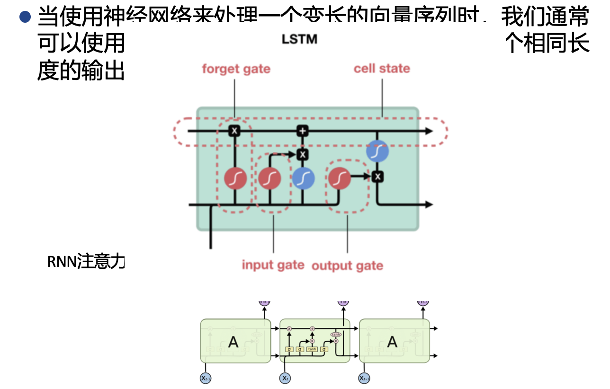
- 传统 CNN 的缺陷：
- 局部感受野受限： 单层卷积只能捕捉到滑动窗口内的局部特征。如果主语和谓语隔得很远，单层 CNN 在处理谓语时根本看不到主语，无法直接建立长距离的语法联系，必须通过堆叠多层卷积才能间接、缓慢地扩大视野。
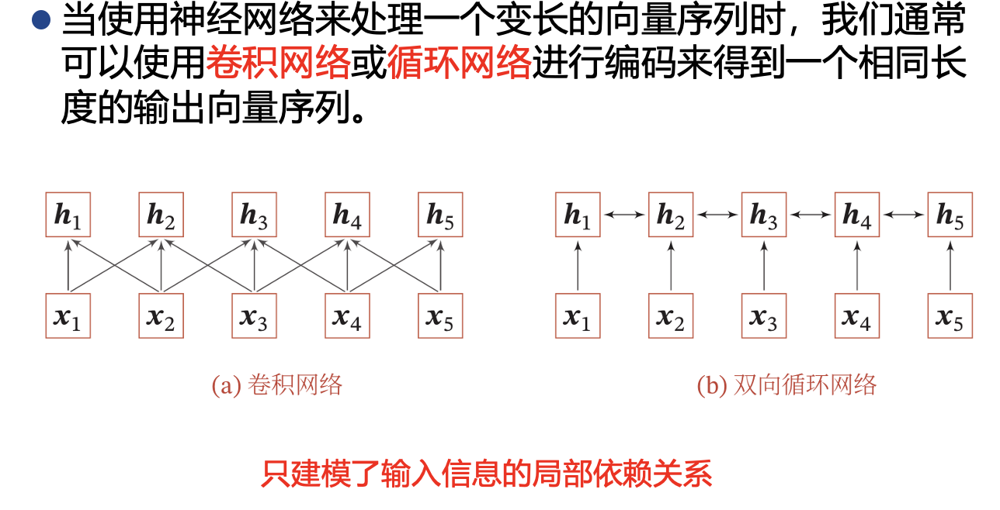
注意力机制（Attention Mechanism）的颠覆式核心思想：
彻底砍断空间窗口和时间链条的限制，允许模型在计算任何一个位置的特征时，都能够直接拉一根线“回头看”整个输入序列，不通过任何“中间商”，直接建立起 $O(1)$ 步直达的非局部（Non-local）全局依赖关系。
- 局部感受野受限： 单层卷积只能捕捉到滑动窗口内的局部特征。如果主语和谓语隔得很远，单层 CNN 在处理谓语时根本看不到主语，无法直接建立长距离的语法联系，必须通过堆叠多层卷积才能间接、缓慢地扩大视野。
1. 注意力机制的核心概念与三大标准工作流
1.1 核心出发点：如何表示任务相关性？
为了量化“当前任务和哪些信息相关”，注意力机制引入了 Query（查询向量，通常用 $q$ 表示）：
- 定义： $q$ 代表模型“当前的意图”或“正在思考的上下文需求”。
- 直观理解： 它就像你带着一个特定的“问题”，去海量的数据档案里寻找匹配的“答案”。所有的注意力分配，本质上都是在回答一个问题：当前的输入信息，与我的查询 $q$ 有多大关系？
1.2 注意力机制的三个标准步骤
无论哪种注意力机制变体，前向传播都可以完美归纳为以下三个抽象步骤：
- 识别（打分函数）：
- 核心问题： 面对众多的输入信息，如何判断哪些与当前任务相关、哪些无关？
- 数学实现： 利用打分函数 $s(x, q)$ 计算当前查询 $q$ 与各个输入 $x$ 之间的匹配程度，得到一个原始的标量得分。任务相关性越大，分值越大。
- 过滤（提取机制）：
- 核心问题： 知道了相关性得分后，如何提取出相关特征，并忽略无关的背景噪声？
- 数学实现： 通常利用
Softmax函数将原始得分转化为代表注意力的概率分布（权重 $\alpha$），然后将该权重乘以对应的特征，实现“高分特征放大，低分特征抑制”的过滤效果。
- 建模（聚合机制）：
- 核心问题： 过滤出有用的零散特征后，如何将它们整合成一个有机的整体供下游网络使用？
- 数学实现： 将所有过滤后的特征进行加权求和（加和）或拼接，生成最终的上下文向量（Context Vector）。
2. 四种典型注意力机制变体对比
随着技术演进，注意力机制在打分、提取和聚合三个步骤上衍生出了不同的经典变体：
| 模块变体 | 软性注意力机制 (Soft) | 硬性注意力机制 (Hard) | 键值对注意力机制 (Key-Value) | 多头注意力机制 (Multi-Head) |
|---|---|---|---|---|
| 第一步：打分函数 | $s(x, q)$ | $I[s(x, q); \lambda]$ | $s(k, q)$ | $s(k, q_i)$ |
| 第二步：提取机制 | $s(x, q) \cdot x$ | $argmax$ | $s(k, q) \cdot v$ | $s(k, q_i) \cdot v$ |
| 第三步：聚合机制 | 加和 | $argmax$ | 加和 | 拼接（Concatenate）后通过权重矩阵加和映射 |
💡 变体底层逻辑深度解析
- 软性注意力机制 (Soft Attention)：
“雨露均沾”。它计算出每一个输入信息的权重分布（0 到 1 之间），然后进行加权求和。整个计算过程是连续且完全可微（Differentiable）的，可以直接通过反向传播算法随网络一同端到端训练，是现代最主流的机制。 - 硬性注意力机制 (Hard Attention)：
“非黑即白”。通过 $argmax$ 或设置阈值 $\lambda$，直接在所有输入中强行挑出得分最高的那一个输入，将其余输入直接丢弃（权重强行设为 0）。由于这种选择是离散、不可导的，无法直接使用梯度下降，通常需要借助强化学习（策略梯度）来优化，目前较少单独使用。 - 键值对注意力机制 (Key-Value Attention)：
引入了“计算机数据库检索”或“查字典”的思想。它将输入信息解耦拆分为两个不同的向量：Key ($k$，键/目录/索引) 和 Value ($v$，值/具体干货内容)。- 拿着查询 $q$ 去和所有的键 $k$ 计算匹配度打分。
- 将得到的权重作用在对应的值 $v$ 上，最后进行聚合。这是现代 Transformer 架构的底层基石。
- 多头注意力机制 (Multi-Head Attention)：
“组团开黑”。相当于让模型同时拥有多个不同的 Query（$q_i$），即长了多个“脑袋”。每个头独立地在不同的特征子空间里关注输入序列中不同维度的特征（如 Head 1 关注语法结构，Head 2 关注长距离代词指代，Head 3 关注情感词）。最后将所有头提取出的向量进行拼接（Concat），再通过输出权重矩阵进行整合。
3. 四种主流注意力打分函数 $s(x_n, q)$ 详解
打分函数的任务是量化输入特征与查询向量的相关性。核心原则：任务相关性越大，计算出的标量分值越大。
3.1 加性模型 (Additive Model)
- 工作原理： 引入两个可学习的参数矩阵 $\boldsymbol{W}$ 和 $\boldsymbol{U}$，分别对输入 $\boldsymbol{x}$ 和查询 $\boldsymbol{q}$ 进行线性变换，将它们相加送入 $\tanh$ 非线性激活函数，最后乘以一个参数向量 $\boldsymbol{v}^T$ 映射为一个标量分数。
- 适用场景： 当输入 $\boldsymbol{x}$ 和查询 $\boldsymbol{q}$ 的原始维度（特征数）不相同时，必须用这种模型通过矩阵映射将它们统一到相同维度后再求和。
3.2 点积模型 (Dot-Product Model)
- 工作原理： 直接计算向量 $\boldsymbol{x}$ 和 $\boldsymbol{q}$ 的内积（点积）。在几何空间中，两个向量方向越接近、夹角余弦值越大，内积就越大。
- 适用场景： 要求输入 $\boldsymbol{x}$ 和查询 $\boldsymbol{q}$ 必须具有完全相同的维度。
- 性能优势： 计算效率极高。由于完全由纯矩阵乘法构成，它在显卡（GPU 核心）上能完美进行并行化加速，速度远快于带有非线性激活函数的加性模型。
3.3 缩放点积模型 (Scaled Dot-Product Model)
- 工作原理： 在点积模型的基础上，除以了一个缩放因子 $\sqrt{D}$（其中 $D$ 是向量的维度/特征数）。
- ⚠️ 核心大题考点：为什么要除以 $\sqrt{D}$进行缩放？
当向量维度 $D$ 非常大时，点积的计算结果在数值上可能会变得非常大。这会导致在接下来的Softmax归一化步骤中，绝大部分权重被极度集中在最大的一项上，其余项无限接近于 0。此时，Softmax 函数会进入梯度饱和区，导致反向传播时偏导数几乎为 0（即引发梯度消失问题）。除以 $\sqrt{D}$ 可以将数值拉回合理的方差范围，保持训练的稳定性。
3.4 双线性模型 (Bilinear Model)
- 工作原理： 在点积模型的中间插入了一个可学习的权重矩阵 $\boldsymbol{W}$。
- 两大优势：
- 维度解耦： 允许 $\boldsymbol{x}$ 和 $\boldsymbol{q}$ 的原始维度不同，因为矩阵 $\boldsymbol{W}$ 能够起到空间映射转换的作用。
- 强表达能力： 纯点积模型假设 $\boldsymbol{x}$ 和 $\boldsymbol{q}$ 的各个维度之间必须是一一对应的，而双线性模型通过 $\boldsymbol{W}$ 可以建模 $\boldsymbol{x}$ 的第 $i$ 个维度与 $\boldsymbol{q}$ 的第 $j$ 个维度之间的交叉互动关系，捕获更复杂的特征相关性。
4. 软性注意力机制的前向计算与有监督准确性保证
4.1 软性注意力前向传播两步走
软性注意力在前向计算时，严格遵循以下两个数学步骤：
Step 1: 计算注意力分布 $\alpha$ (归一化打分)
- 概率学视角解析： 引入一个离散随机变量 $z$ 表示模型当前决定把焦点放在第几个输入信息上。条件概率 $p(z = n \mid \boldsymbol{X}, \boldsymbol{q})$ 代表在给定全部输入 $\boldsymbol{X}$ 和当前查询 $\boldsymbol{q}$ 的条件下，模型关注第 $n$ 个输入的概率大小。Softmax 保证了所有注意力权重满足 $\alpha_n \in (0, 1)$ 和总和为 $1$。
Step 2: 根据 $\alpha$ 计算输入信息的加权平均 (聚合)
- 数学本质解析： 注意力机制的最终输出，在数学本质上就是输入特征向量 $\boldsymbol{x}_z$ 在当前概率分布 $p(z \mid \boldsymbol{X}, \boldsymbol{q})$ 下的数学期望（Expectation，即 $\mathbb{E}$）。这种期望的形式使整个公式处处可导，完全支持梯度反向传播。
4.2 注意力准确性的保证：有监督学习的额外参数分支
- 注意力不是人工硬编码指定的： 在主干网络旁，我们额外搭建了一个包含可学习参数的额外注意力参数分支。
- 数据驱动自发收敛： 在有监督学习的驱动下，如果模型看错了地方（例如分类热气球图片时错看了天空），损失函数（Loss）会变大。网络通过反向传播不断调整注意力分支中的参数。
- 可视化结果证明： 经过充分训练后，模型能自动总结规律。在浅层网络，注意力分支会自发形成低阶特征掩码（如 Sky Mask 关注天空和颜色）；在深层网络，则会自发精准锁定高阶语义掩码（如 Balloon Instance Mask 自动抠出热气球实体），通过乘法滤除所有背景噪声。
5. 注意力机制在 NLP 三大常见任务中的落地
看懂应用图的关键在于：准确识别谁扮演了 Query ($q$)，谁扮演了被查询的输入特征。
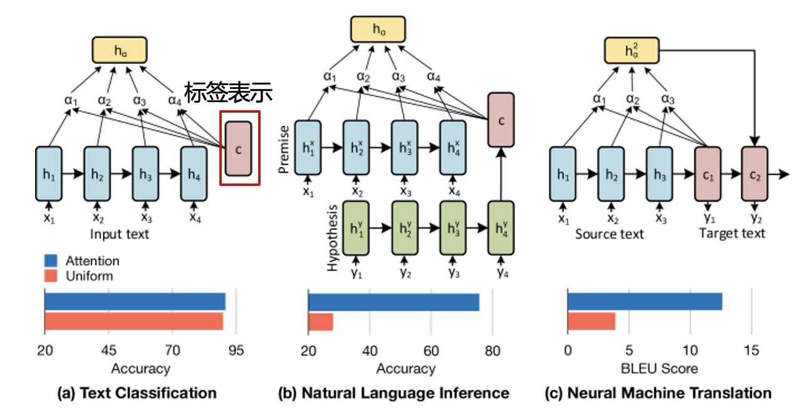
(a) 文本分类任务 (Text Classification)
- Query ($q$) 扮演者： 任务目标标签向量 $c$（随网络训练的特殊向量，代表分类任务的终极目标）。
- 被查询输入 ($x$)： 输入文本通过 RNN 后得到的单词特征序列（$h_1, h_2, h_3, h_4$）。
- 工作流： 目标标签 $c$ 主动去和每个单词特征 $h_i$ 计算匹配度 $\alpha$ $\rightarrow$ 动态提取出情感词或核心词 $\rightarrow$ 聚合成最终的上下文表示 $h_a$ 进行分类。
(b) 自然语言推理任务 (NLI)
- Query ($q$) 扮演者： 假设文本（Hypothesis）经网络处理后得到的总特征向量 $c$（即 $h_4^y$）。
- 被查询输入 ($x$)： 前提文本（Premise）的各个单词特征序列（$h_1^x, h_2^x, h_3^x, h_4^x$）。
- 工作流： 拿着“假设的含义”去“前提”的每个单词状态里去对齐和打分 $\rightarrow$ 寻找能支持蕴含、矛盾或中立的蛛丝马迹 $\rightarrow$ 聚合成 $h_a$ 输出。
(c) 神经机器翻译任务 (NMT)
- Query ($q$) 扮演者： Decoder（解码器）当前时间步的隐状态 $c_1$（代表“我已经翻译到这一步了，下一步我该看什么”）。
- 被查询输入 ($x$)： Encoder（编码器）读入源语言后产生的隐藏状态序列（$h_1, h_2, h_3$）。
- 工作流： 拿着当前的翻译进度 $c_1$ 回头去和原文的各个单词 $h_i$ 算相似度 $\rightarrow$ 得到注意力权重 $\alpha$（实现著名的词对齐） $\rightarrow$ 精准提取原文对应词的语义来预测下一个目标单词 $y_2$。
⚠️ 考试必注意指标细节
- 文本分类 (a) 和自然语言推理 (b) 属于分类任务，底下的评估指标是 Accuracy（准确率）。
- 机器翻译 (c) 属于生成任务，评估翻译质量的国际标准指标是 BLEU Score。
6. 自注意力机制 (Self-Attention) 从微观到宏观矩阵的完整推导
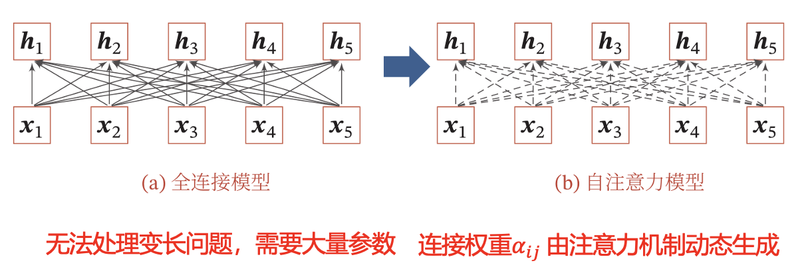
6.1 自注意力与传统全连接（MLP）的本质区别
- 全连接模型： 试图利用固定的特征矩阵 $W$ 硬性连接所有输入输出。缺陷： 矩阵形状被焊死，无法处理变长序列问题，且面对长文本时会产生参数爆炸。
- 自注意力模型： 任意两个词之间的连接权重 $\alpha_{ij}$ 完全由输入内容当场动态生成。参数投影矩阵的大小只与特征维度 $D$ 有关，与序列长度 $N$ 毫无关系，完美通杀任意长短的变长问题。
6.2 彻底理清：$Q, K, V$ 到底代表什么物理意义？
在自注意力层中，每一个原始输入特征向量 $a^i$ 都会通过三路线性投影，同时演化出三种截然不同的特殊身份：
- Query ($\boldsymbol{q}^i = \boldsymbol{W}^q \boldsymbol{a}^i$)： 主动提问者。代表“当前这个位置想寻找什么样的上下文信息”。
- Key ($\boldsymbol{k}^i = \boldsymbol{W}^k \boldsymbol{a}^i$)： 被动索引标签。代表“当前位置包含着什么样的特征标识，可以供别人来查我”。
- Value ($\boldsymbol{v}^i = \boldsymbol{W}^v \boldsymbol{a}^i$)： 实质干货内容。代表“如果我和你的提问对上了，我能为你提供什么样的实际文本精华”。
- 为什么叫“自”注意力？ 提问者、索引档案、实质内容，全都是这一句话（同一个序列）自己内部左手倒右手变出来的，无需外部信息构造任务，属于完全自给自足。
6.3 微观单位置计算流程（以计算第二个位置的输出 $b^2$ 为例）
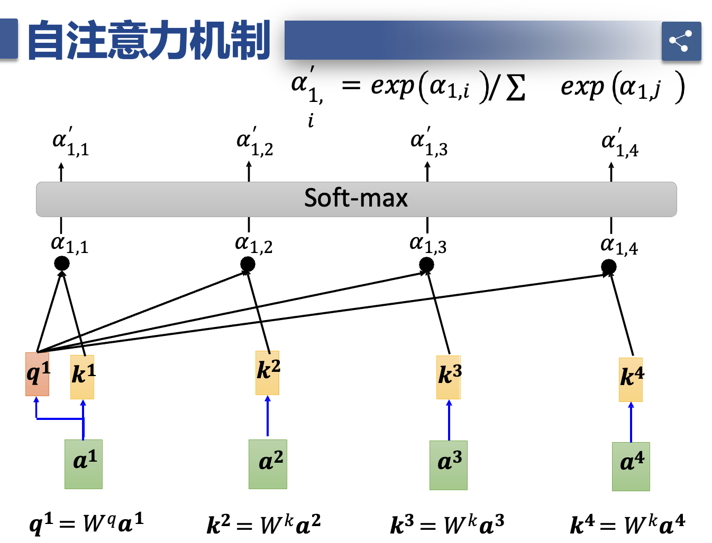
- 身份产生： 输入 $a^2$ 乘以 $W^q$ 产生当前的主角 $q^2$；全场所有人（包括自己）乘以 $W^k$ 产生档案标签 $k^1, k^2, k^3, k^4$。
- 点乘打分： $q^2$ 跨越空间长线，主动去和全场所有的 $k^j$ 做向量内积点乘，现算原始亲密度得分：
- 列 Softmax 归一化： 将这一组野生得分塞进 Softmax。注意：Softmax 是严格按列（Column-wise）单独进行的，因为 $q^2$ 的精力（100% 注意力）必须在属于它自己的那一列里被瓜分完毕，输出概率权重。
- 加权提取与聚合： 将归一化权重与各自位置的内容向量 $v^j$ 在乘法节点相乘（信息过滤），最后沿着红色总线全部加起来，吐出全新的融合特征 $b^2$：
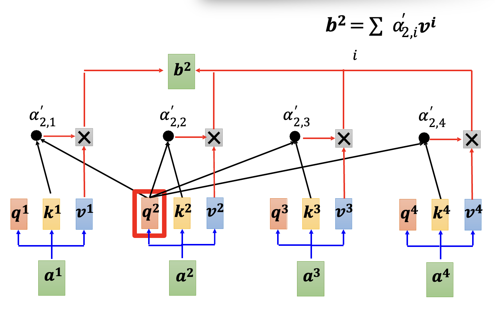
⚠️ 重要的师承记号避坑指南（考试必看）
- 国际通用论文习惯将输入写成行向量，公式写成 $\boldsymbol{Q} = \boldsymbol{X}\boldsymbol{W}_Q$（权重在右）。
- 本校课程课件中，统一采用国内更习惯的“列向量拼接”形态。输入矩阵 $\boldsymbol{I} = [\boldsymbol{a}^1, \boldsymbol{a}^2, \boldsymbol{a}^3, \boldsymbol{a}^4]$ 排在右边，权重矩阵 $\boldsymbol{W}$ 排在左边。
- 考试请严格牢记左乘格式：
6.4 宏观 GPU 硬件并行的矩阵形态四步走
在实际工程落地时，为了让 GPU 算力拉满，微观的拉线全部转变为爽快的四大矩阵大派对步骤：
- 第一步（全量映射）： 将输入矩阵 $\boldsymbol{I}$ 丢进去，一步到位批量生产出全场的 $Q, K, V$ 三大矩阵。
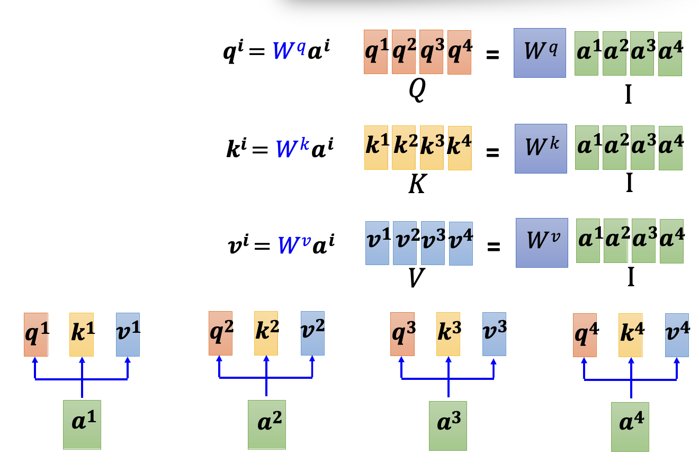
- 第二步（全场大碰撞）： 让 $K^T$ 矩阵直接乘以 $Q$ 矩阵，一瞬间爆出全场所有人看所有人的原始得分大矩阵：
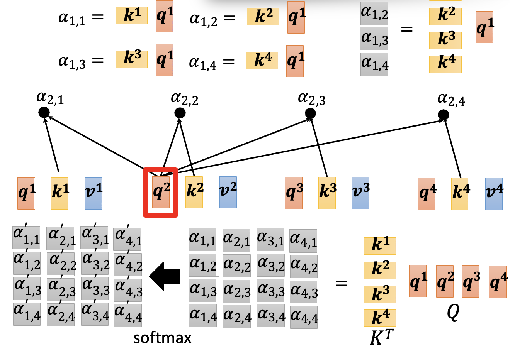
(在此矩阵中，第 $i$ 行第 $j$ 列的格子就代表第 $j$ 个词去撞第 $i$ 个词算出的原始分数) - 第三步（列归一化）： 将大矩阵丢进 Softmax 轴中，按列归一化，得到全景注意力权重矩阵 $\boldsymbol{A}$：
- 第四步（干货打包）： 拿纯净的权重矩阵 $\boldsymbol{A’}$ 直接乘以干货大矩阵 $\boldsymbol{V}$，一步直达产出整齐躺着所有脱胎换骨新特征的最终矩阵 $\boldsymbol{O}$：
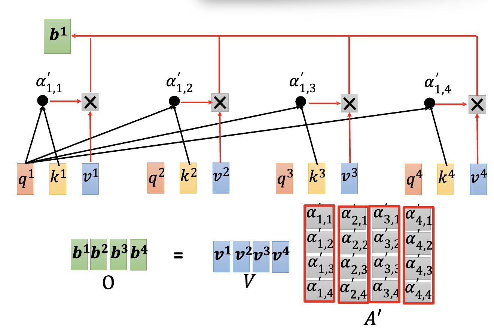
7. 多头自注意力机制的完整收尾整合
7.1 多头分裂与独立前向流
当常规的 $\boldsymbol{q}^i, \boldsymbol{k}^i, \boldsymbol{v}^i$ 生成后，它们会再次乘以各自头部的独立小参数矩阵，分裂映射到不同的低维子空间中：
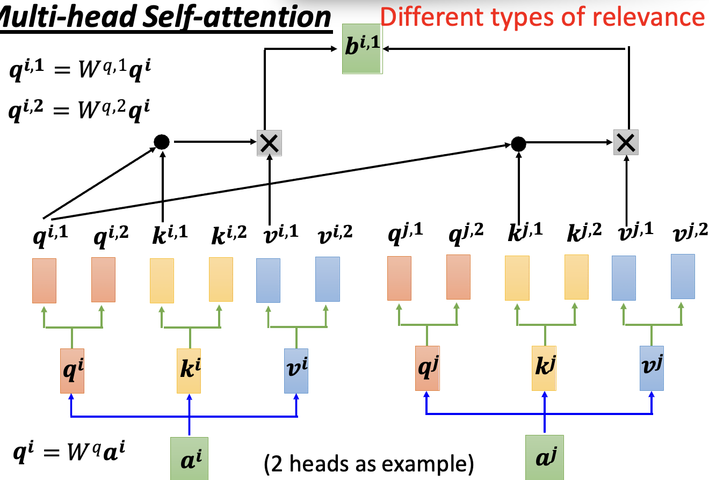
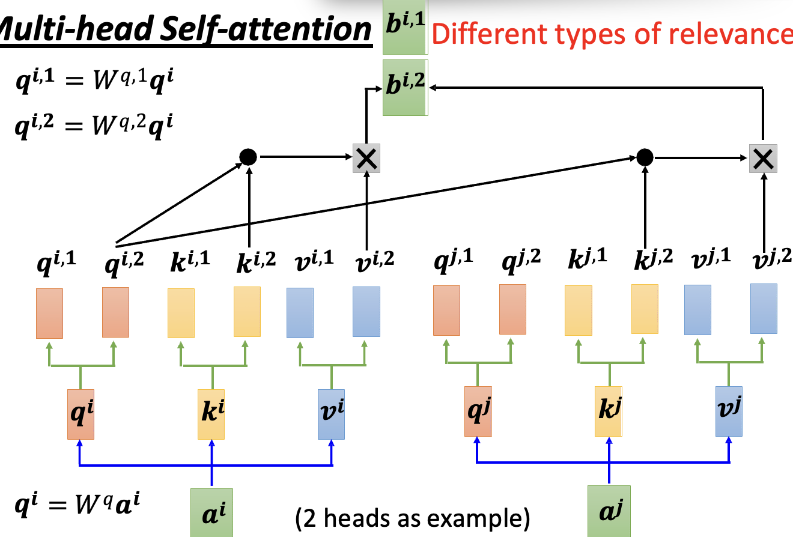
- 头 1 (Head 1)： 拿着 $\boldsymbol{q}^{i,1}$ 专门去和全场的 $\boldsymbol{k}^{j,1}$ 碰撞，乘以 $\boldsymbol{v}^{j,1}$ 聚合成输出 $\boldsymbol{b}^{i,1}$。
- 头 2 (Head 2)： 在旁边完全独立地同时并行计算，聚合成输出 $\boldsymbol{b}^{i,2}$。
- 哲学论述点（Different types of relevance）： 不同的头代表了看待同一批输入信息的不同维度和视角。例如 Head 1 负责主谓对齐，Head 2 负责时态或代词对齐。
7.2 终极维度恢复与特征交融
各个头交上各自视角的特征报告后，多头自注意力层利用顶部的终极公式进行收尾整合：
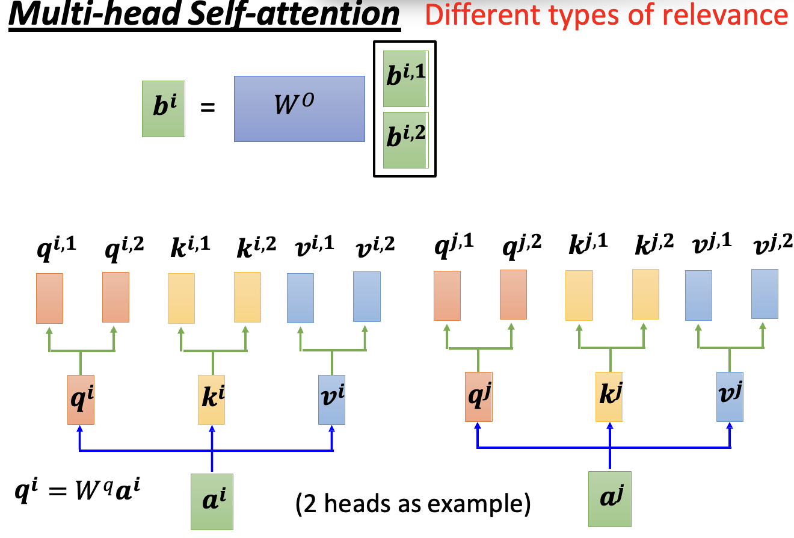
- 大拼接（Concatenation）： 将绿色小方块 $\boldsymbol{b}^{i,1}$ 和 $\boldsymbol{b}^{i,2}$ 纵向整齐地上下叠（拼接）在一起，组合成一个长向量。完美对应聚合机制中的“拼接”。
- 输出投影（$W^O$ 矩阵）： 引入可学习的输出权重矩阵 $\boldsymbol{W}^O$。它一方面作为“传话筒”让不同头捕捉到的特征进行深度的纵向交叉融合；另一方面在数学上起到降维映射的作用，将拉长的向量完美复原回模型最初设定的标准特征维度，吐出最终功德圆满的特征 $\boldsymbol{b}^i$。
8. 期末大题绝杀：单头 vs 多头自注意力核心优缺点对比表
| 序号 | 比较维度 | 单头自注意力 | 多头自注意力 | 简要说明（期末大题标准答题点） |
|---|---|---|---|---|
| 1 | 注意力头的数量 | 1 | 多个（如 8、16 等） | 多头机制能够同时关注输入序列的不同部分与不同维度的子空间特征。 |
| 2 | 信息捕捉能力 | 有限 | 丰富 | 通过不同的头捕捉不同角度的关联特征，涵盖的语义信息更丰富。 |
| 3 | 表达能力 | 相对较弱 | 相对较强 | 极大地提高了模型的特征表达能力，有助于网络处理极复杂的长文本任务。 |
| 4 | 泛化性能 | 一般 | 较好 | 具备类似集成学习的哲学思想，增强了模型对未见新数据的适应能力和鲁棒性。 |
| 5 | 计算复杂度 | 较低 | 较高 | 增加了参数量和基础计算量，但底层可以通过高并发的矩阵打包并行计算来完美优化。 |
| 6 | 训练难度 | 相对简单 | 相对复杂 | 参数容量暴增，因而需要更庞大的海量训练数据和计算资源才能喂饱模型、避免过拟合。 |
| 7 | 应用场景 | 简单任务 | 复杂任务 | 多头自注意力在大规模大语言模型（LLM）、复杂的机器翻译、文本生成任务中表现极为优异，是工业界绝对的标配。 |
| 8 | 模型大小 | 较小 | 较大 | 需要更大的模型容量空间，来存储和沉淀每个头独立拥有的海量可学习投影参数。 |
概率图模型（PGM）核心笔记：贝叶斯网络
1. 基础定义与核心概念
贝叶斯网络（Bayesian Network），也称有向图模型（Directed Graphical Model）或信念网络（Belief Network, BN），是一种用图形化结构来表达变量间概率依赖关系的数学模型。
- 节点（Nodes）：每个圆圈代表一个随机变量 $X_k$（如天气、疾病、警报状态等）。
- 有向边（Directed Edges）：箭头（如 $A \rightarrow B$）表示变量之间存在非独立的因果或直接依赖关系。
- 拓扑结构：必须是一个有向非循环图（DAG），即图中绝对不能出现环路。
2. 联合概率的因式分解
在全连接（无图结构化简）的情况下，多元变量的联合概率计算量会随变量数呈指数级暴涨。贝叶斯网络利用图结构将联合概率分布拆解为局部条件概率的连乘形式：
核心逻辑：整个大系统的联合概率，只需要看每个节点仅仅基于其父节点的局部条件概率，然后把它们全部乘起来即可。
3. 局部马尔可夫性质（Local Markov Property）
3.1 概念定义
局部马尔可夫性质是贝叶斯网络化简计算的理论基石，其数学表达为：
- 含义：在给定某个节点 $Xk$ 的所有父节点 $X{\pi_k}$ 的情况下，$X_k$ 与它的所有非后代节点 $Z$ 都是条件独立的。
- 直观理解：一旦“父母（父节点）”的状态确定了，“爷爷/长辈（非后代节点）”的状态就不会再影响“孩子（当前节点）”的决定。
3.2 例题
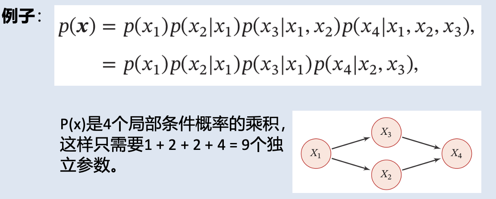
4. 条件独立性与三种基本拓扑（D-分离基础）
我们可以把箭头想象成水管，信息像水流一样在节点间流动。中间节点 $X_2$ 的状态（已知或未知）就是控制水流的阀门。
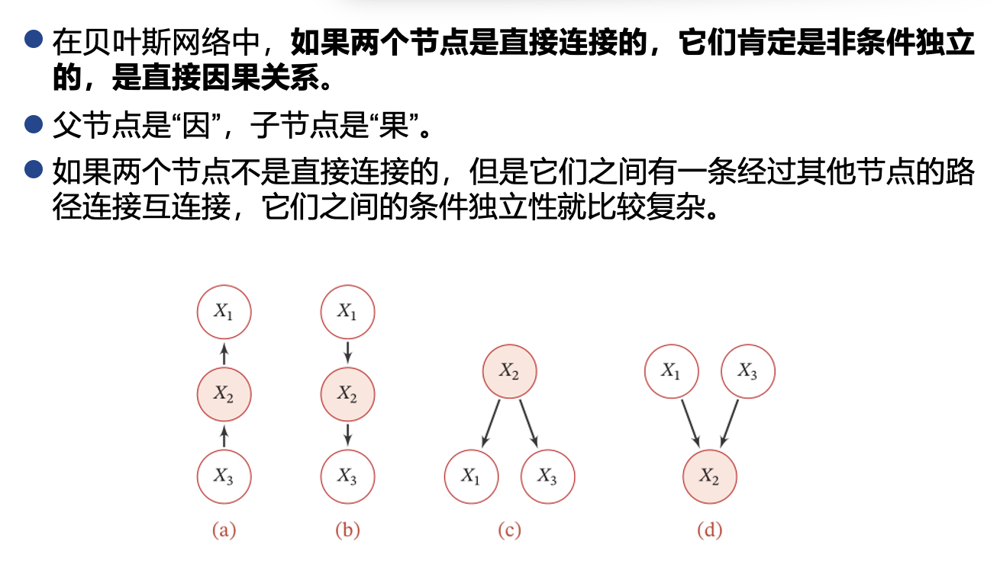
(a) & (b) 链式结构 (Chain)
- 拓扑结构：$X_1 \rightarrow X_2 \rightarrow X_3$
- 💡 现实例子：$X_1$（下雨） $\rightarrow$ $X_2$（地面湿） $\rightarrow$ $X_3$（路滑）
- 规则与解释：
- 当 $X_2$ 未知时（阀门打开，水流相通）：如果你不知道地面湿不湿，那么“有没有下雨（$X_1$）”必定会影响你对“路滑（$X_3$）”的概率判断。此时 $X_1$ 和 $X_3$ 不独立。
- 当给定 $X_2$ 已知时（阀门关闭，水流阻断）：如果你已经亲眼看到“地面是湿的（$X_2$ 已知）”，无论是因为下雨还是洒水车导致的，单凭“地湿”这一事实就已经足够让你推断路滑了。此时，再告诉你“有没有下雨（$X_1$）”，对判断“路滑（$X_3$）”没有任何新帮助。
- 数学结论：
(c) 共因/叉形结构 (Fork)
- 拓扑结构：$X_1 \leftarrow X_2 \rightarrow X_3$
- 💡 现实例子：$X_2$（气温极低）导致了 $X_1$（湖面结冰）和 $X_3$（路上行人都穿羽绒服）
- 规则与解释：
- 当 $X_2$ 未知时（阀门打开，水流相通）：如果你不知道今天天气，但出门看到满大街的人都穿羽绒服（$X_3$），你自然会推测今天极冷，从而推断湖面可能结冰了（$X_1$）。此时 $X_1$ 和 $X_3$ 不独立（存在正相关）。
- 当给定 $X_2$ 已知时（阀门关闭，水流阻断）：如果天气预报已经明确告诉你“今天气温是零下 10 度（$X_2$ 已知）”，你已经掌握了最根本的原因。此时，别人穿不穿羽绒服（$X_3$），都不会改变你对湖面是否结冰（$X_1$）的概率估计。
- 数学结论：
(d) 共果/V型/对撞结构 (Collider)
- 拓扑结构：$X_1 \rightarrow X_2 \leftarrow X_3$ （此结构规则与前两者完全相反）
- 💡 现实例子：$X_1$（发生地震）和 $X_3$（家里进小偷）都会导致 $X_2$（家里警报器响）
- 规则与解释：
- 当 $X_2$ 未知时（阀门默认关闭，水流阻断）：在平时，警报器没响（或不知道响没响）时，发生地震（$X_1$）和家里进小偷（$X_3$）是完全独立、互不影响的两件事。不能因为今天地震了，就认为小偷今天更可能来。
- 数学结论：
- 当给定 $X_2$ 已知时（阀门强行打开，水流相通）：有一天你突然听到警报器狂响（$X_2$ 已知）。此时，如果你看新闻发现刚刚发生了地震（$X_1$ 发生），你会想：“哦，原来是因为地震响的，那大概率不是进小偷了。” 地震的出现“解释过去（Explain Away）”了警报的原因，从而降低了进小偷（$X_3$）的概率。此时， $X_1$ 和 $X_3$ 变得不再独立。
- 数学结论：
💡 独立性判定口诀
- 链式与叉式：无条件时通（不独立），给条件时堵（独立）。
- V型对撞式：无条件时堵（独立），给条件时通（不独立）。
5. 节点网络因式分解
对于复杂的贝叶斯网络，通过“逐个节点找父节点”的映射法，可以快速写出联合概率分布。
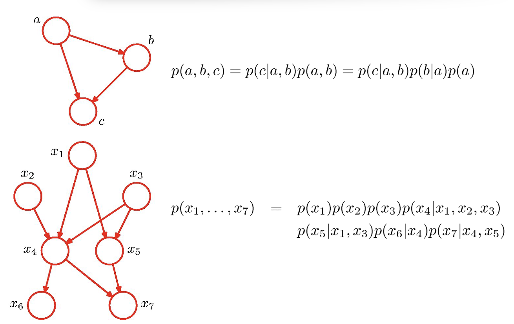
朴素贝叶斯参数估计推导
1. 符号体系与基本假设
设训练数据集为 $\tilde{X} = (x_1, x_2, \dots, x_N)$，其中包含 $N$ 个独立同分布（IID）的样本。
- 单样本结构：每个文本样本 $x_i$ 是一个 $n$ 维向量，由 $n$ 个位置的特征词组成：
- 特征词取值空间：每个位置的变量 $X^{(j)}$ 的取值均属于一个大小为 $V$ 的词表：
- 目标分类标签：类别变量 $Y$ 的取值范围为 $C = {c_1, c_2, \dots, c_K}$。
- 待学习的核心参数：定义条件概率参数 $\theta_l^{c_k}$，表示在类别为 $c_k$ 的条件下，特征位置出现词项 $w_l$ 的概率：
2. 构建全局似然函数
根据有向概率图模型的条件独立性假设（局部马尔可夫性质），在给定类别标签 $y_i$ 时，文本内各个位置的词彼此条件独立。因此，单个样本的联合概率分布可以因式分解为：
基于样本间独立同分布（IID）的假设，整个数据集的全局似然函数 $p(\tilde{X} \mid \Theta)$ 等于所有单样本概率的连乘：
3. 对数似然函数的变换与参数展开
为了将连乘操作转化为利于求导的连加操作，我们对似然函数取自然对数，构建对数似然函数 $\mathcal{L}$。我们暂时忽略不含未知参数 $\theta$ 的类先验部分 $\log p(y_i)$，专注于条件概率部分的优化：
为了精准提取出每一个具体的参数 $\theta_l^{c_k}$，我们引入指示函数（Indicator Function） $I(\cdot)$ 作为计数开关：
利用该指示函数，可以将对数似然函数展开为对整个词表和所有类别的遍历形式（四层嵌套求和）：
利用算子重组，将最外层对样本 $i$ 的求和移入内部，定义累积计数变量 $n_{j,l}^{c_k}$：
此时，对数似然函数精简为经典的结构：
4. 引入约束条件与拉格朗日函数
由于 $\theta_l^{c_k}$ 具有概率的物理属性，在任意一个确定的类别 $c_k$ 下，全词表所有词的概率归一化条件构成了模型的硬性等式约束：
这是一个典型的带等式约束的多元函数极值问题。我们引入拉格朗日乘子 $\lambda$，构造无约束的拉格朗日目标函数 $\mathcal{L}’$：
5. 求偏导数并建立方程组
根据拉格朗日乘子法，最优解必在各个变量的偏导数同时为 0 处取得。我们对特定类别下的特定参数 $\theta_l^{c_k}$ 以及乘子 $\lambda$ 分别求偏导：
对参数 $\theta_l^{c_k}$ 求偏导（注意：$\frac{\partial \log \theta}{\partial \theta} = \frac{1}{\theta}$，且非目标项的导数均为 0）：
由此解出参数 $\theta_l^{c_k}$ 的表达式（含未知数 $\lambda$）：
对拉格朗日乘子 $\lambda$ 求偏导（回归约束条件）：
6. 消除未知数，解析最终解
为了消除方程 (1) 中的中间变量 $\lambda$，我们将方程 (1) 的两边同时对词表内所有可能的词项（即对下标 $l$ 从 $1$ 到 $V$）进行求和：
将等式左边代入方程 (2) 的归一化约束条件（$\sum_{l=1}^V \theta_l^{c_k} = 1$）：
两边同乘以 $\lambda$，成功剥离出拉格朗日乘子的显式解析解：
最后，将解出的 $\lambda$ 重新代回方程 (1) 中，并展开计数变量 $n_{j,l}^{c_k}$ 的原始指示函数形态，即得极大似然估计（MLE）下的终极最优参数公式：
📊 终极数学证明结论
- 分子（精确计数）：在属于类别 $c_k$ 的全部样本中，目标特征词 $w_l$ 出现的总频数。
- 分母（空间归一化）：在属于类别 $c_k$ 的全部样本中，全词表所有词项出现的总频数（即该类别语料库的总长度）。
该推导在数数层面上无懈可击地证明了：概率图模型在离散完全观测数据下的最大似然估计，其数学本质就是局部频数的条件概率归一化。
概率图模型与变分自编码器 (VAE)
1. 隐变量与参数估计基础
1.1 隐变量 (Latent Variables) 的影响
隐变量 $Z$ 是不可观测的变量，它的存在会使概率模型的学习和推断过程变得复杂，通常转化为积分和条件分布的问题。
- 对观测变量 $x$ 分布学习的影响：
- 对目标变量 $y$ 分布推断的影响：
1.2 参数估计方法 (假设参数的分布参数为 $\Theta$)
当不存在隐变量时，我们可以直接利用求导为零来求解参数：
- 最大似然估计 (MLE)： 直接利用数据进行点估计。在参数估计时通常使用MLE。
- 最大后验估计 (MAP)： 引入了参数的先验分布。在进行概率值推断时，最大后验需要加上参数的先验分布。
- 贝叶斯估计： 最大化概率期望，而非求单点极值。
2. 期望最大化 (EM) 算法
当模型中存在隐变量时，直接求导最大化似然 $\log p(X|\Theta)$ 变得极其困难。EM算法通过引入隐变量的任意分布 $z \sim q(z)$ 来解决这个问题。
2.1 似然函数的拆解与下界 (ELBO)
通过对数恒等式和引入 $q(z)$，可以将对数似然拆分为两部分：
因为 KL散度始终大于等于0，所以 $B$ 构成了对数似然的下界 (Evidence Lower Bound, ELBO)。
2.2 EM 算法的迭代步骤
难点在于既需要优化参数 $\Theta$，也需要优化分布 $q(z)$。
- E Step (期望步): 固定 $\Theta$，优化分布 $q(z)$ 使得其与后验分布 $p(z|X, \Theta)$ 的 KL 散度最小：$\min_{q(z)} KL[q(z) || p(z|X, \Theta)]$
- M Step (最大化步): 固定 $q(z)$，优化参数 $\Theta$ 以最大化下界 $B$：$\max{\Theta} B = E{z \sim q(z)}[\log p(x, z|\Theta)] - KL[q(z)||p(z)]$
3. M Step 中期望的求解方法
M Step 的核心是如何计算期望 $E_{z \sim q(z)}[\log p(x|z, \Theta)]$。有两种主要方法：
3.1 方法1：MCMC (马尔可夫链蒙特卡洛) 求解
不对后验分布做近似，直接通过数值模拟出期望值。
- E Step: 直接从后验分布 $p(z|x, \Theta)$ 中采样 $L$ 个样本 $z^{(l)}$。
- M Step: 对积分项进行采样模拟，梯度下降更新 $\Theta$：
3.2 方法2：变分推断求解 (Variational Inference)
对棘手的后验分布 $p(z|x, \Theta)$ 做近似。给分布 $q(z)$ 引入参数 $\phi$，得到 $q(z|\phi)$。
- E Step: 优化参数 $\phi$ 以最大化左项（减小KL散度）。通常需要设计合理的 $q(z|\phi)$，使得积分项可解。
- M Step: 代入 E Step 的 $\phi$，优化参数 $\Theta$ 以最大化包含期望的项。
- 缺点： 分布 $q(z|\phi)$ 的设计有时很难；效果易受近似分布形式的影响。
4. 变分自编码器 (VAE)
VAE 是变分推断在深度学习中的经典实例，它将传统的自编码器概率化。
4.1 传统 AE vs VAE
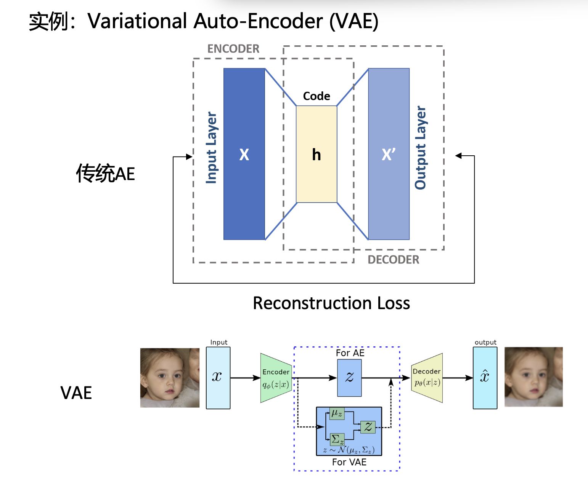
4.2 VAE 概率图模型设计
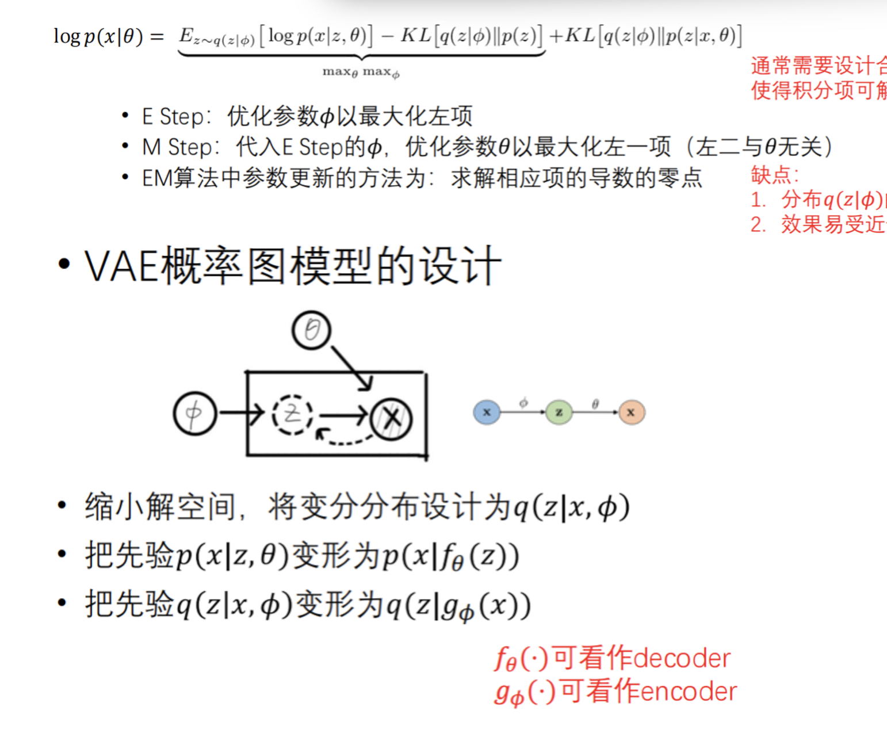
4.3 VAE 的核心方程与目标
求解目标：为了最大化似然，通过直接利用神经网络优化 $\theta, \phi$ 来最大化等式右侧的下界。
5. VAE 的优化与重参数化技巧 (Reparameterization Trick)
5.1 损失函数拆解
对于数据点 $x^{(i)}$，需要最大化的目标（等价于最小化损失）拆分为两部分：
- 正则化项 ($\mathcal{L}_1$): $-KL[q(z|g_\phi(x)) || p(z)]$。假设变分分布和先验都是高斯分布，KL散度极易闭式求解和求导。
- 重建误差项 ($\mathcal{L}_2$): $E{q(z|g\phi(x))}[\log p(x|f_\theta(z))]$。这一项的梯度求解十分困难。
5.2 采样求梯度的困境
直接在 $E{q(z|g\phi(x))}[\dots]$ 中使用数值采样来求关于 $\phi$ 的导数是行不通的。因为在采样过程 $z^{(l)} \sim q(z|g_\phi(x))$ 中，采样操作本身是不可导的，丢失了变分分布参数 $\phi$ 的梯度，导致反向传播断裂。
5.3 SGVB 求解与重参数化 (Reparameterization Trick)
为了解决梯度丢失问题，设计对隐变量 $z$ 进行重参数化：
对于一个微小的、从标准正态分布等固定的基础分布中采样的噪声变量 $\epsilon$，通过确定的函数 $\tilde{g}_\phi$ 将其映射为 $z^{(l)}$。
- 作用： 间接地从 $p(\epsilon)$ 而非依赖于 $\phi$ 的分布中采样。原先分布中的参数 $\phi$ 被转移到了期望内的确定性映射函数中。此时，网络变成了端到端可导的。
5.4 VAE 的神经网络计算流程
- 输入 $X$ 进入 Encoder (Q网络)。
- Encoder 输出隐分布的 均值 $\mu(X)$ 和 方差 $\Sigma(X)$。
- 计算正则化损失 (KL Loss): 直接利用 $\mu(X)$ 和 $\Sigma(X)$ 与标准正态分布计算 KL 散度。
- 重参数化采样 (Reparameterization): * 从 $\mathcal{N}(0, I)$ 独立采样噪声 $\epsilon$。
- 计算隐向量 $Z = \mu(X) + \sqrt{\Sigma(X)} \cdot \epsilon$。（此时采样过程与模型参数解耦，梯度可以顺着 $\mu$ 和 $\Sigma$ 流回 Encoder）。
- 解码与重建: 将 $Z$ 送入 Decoder (P网络)，输出重建数据 $f(Z)$。
- 计算重建损失: 如 $||X - f(Z)||^2$。
- 总损失计算与反向传播更新参数 $\theta, \phi$。
深度生成模型
一、 生成模型的底层逻辑
生成模型的本质是让机器学会“举一反三”，从给定的观测数据中学习其背后的真实分布，并具备创造新数据的能力。
1. 核心两个步骤
- 密度估计 (Density Estimation) —— “寻找规律”
- 用一个带参数的模型 $p_\theta(x)$ 极力逼近真实但未知的分布 $p_r(x)$。
- 数学本质：通过最大化似然函数（MLE）或最小化分布间差异（如 KL 散度），让模型的“包容圈”尽可能完美地覆盖真实数据点。
- 采样 (Sampling) —— “凭空创造”
- 从训练好的模型分布 $p_\theta(x)$ 中抽取新样本，倒推出全新的、原本不存在的数据。
2. 现代生成模型的灵魂：隐空间映射 (Latent Space)
直接在高维空间（如几万像素的图片空间）中直接计算概率密度极难。现代深度生成模型普遍采用“低维隐空间映射高维复杂数据”的思路：
- 源头：从一个数学性质极完美的简单分布中采样隐变量（如标准正态分布 $z \sim N(0, I)$）。
- 桥梁：通过深度神经网络 $G_\theta(z)$（空间魔术师）进行复杂的非线性拉伸、折叠和弯曲。
- 终点：映射到高维的目标数据流形（Manifold）上，无中生有地捏出逼真数据。
二、 三大经典家族与“三难困境”
不同的大模型家族，其本质区别在于如何搞定“密度估计”和“采样”。
| 模型家族 | 密度估计策略 | 采样特点 |
|---|---|---|
| VAE (变分自编码器) | 显式近似估计。引入隐变量，最大化变分下界（ELBO）。 | 连续高斯分布映射，一步出图，但画面容易模糊。 |
| GAN (生成对抗网络) | 隐式估计。放弃直接计算概率，靠判别器与生成器博弈。 | 一步到位，生成图像极其锐利，但极难训练且容易模式坍塌。 |
| Diffusion (扩散模型) | 逐步推导估计。将复杂的密度估计拆解为成百上千步的“去噪”。 | 像雕刻一样迭代去噪，质量与多样性极佳，但早期采样速度慢。 |
💡 生成模型三难困境 (Generative Trilemma)
完美的生成模型渴望同时满足：① 高质量样本、② 快速采样、③ 模式多样性。
- VAE 满足 ②③，牺牲了 ①
- GAN 满足 ①②，牺牲了 ③
- Diffusion 满足 ①③，牺牲了 ②（现代研究如 Flow Matching 正在努力打破这一限制）
三、 GAN（生成对抗网络）深层数学原理
GAN 的核心思想是零和博弈（Zero-Sum Game）。
1. 全局 MinMax 目标函数
- 判别器 $D(x)$ 的野心 ($\max_D$)：让真图 $x$ 趋近于 1（$\log 1 = 0$）；让假图 $G(z)$ 趋近于 0，即 $1-D(G(z))$ 趋近于 1。
- 生成器 $G(z)$ 的野心 ($\min_G$)：极力对抗判别器，让判别器把假图看成真图。
2. 完美判别器 $D^*(x)$ 的数学解
当固定生成器 $G$ 时，对目标函数求偏导并令其为 0，可解出最优判别器表达式：
- 若某点真图密度远大于假图，$D^*(x) \to 1$。
- 若两分布完全重合（达到纳什均衡），$D^*(x) = 0.5$（判别器完全无法分辨，只能瞎猜）。
3. JS 散度（Jensen-Shannon）证明
将最优判别器 $D^*(x)$ 代回原目标函数，经过代数“凑项”（引入平均分布 $m = \frac{pr + p\theta}{2}$），可严密证明：
这表明：在理想状态下，优化 GAN 的生成器本质上就是在最小化真实分布与生成分布之间的 JS 散度。
四、 GAN 的致命绝症：模型坍塌 (Mode Collapse)
在实际训练初期，由于判别器太强，原生 Loss 会导致梯度消失。Goodfellow 提出了一个启发式 Trick：让生成器改为最大化 $\log D(G(z))$。然而，这引入了更严重的数学副作用。
1. 错误目标的代价
经过公式推导，该 Trick Loss 展开后包含了一项逆向 KL 散度（Reverse KL Divergence）：
2. 正向 KL vs 逆向 KL 的行为差异
- 正向 KL （VAE 使用）：
- 零避免 (Zero-avoiding)：只要真实分布 ，模型分布 就必须大于 0。
- 结果：模式覆盖 (Mode-covering)。模型倾向于把所有模式都包住，导致结果平庸、模糊。
- 逆向 KL （GAN Trick 引入）：
- 零迫使 (Zero-forcing)：只要真实分布 的地方，模型分布 必须雷厉风行地变成 0。
- 结果：模式寻求 (Mode-seeking)。模型宁可放弃很多正确的模式，也绝不冒风险生成一个“不在真图分布里”的脏样本。
3. 模型坍塌的本质
生成器为了“少做少错”，会采取保本逃避策略。例如真实数据同时包含“猫”和“狗”两个峰，生成器发现画“猫”能稳稳骗过判别器，就会彻底放弃画狗的能力，从此只画猫。多样性瞬间丧失。
此外，由于公式中还要同时最大化 JS 散度（$-2D_{\text{JS}}$），两股相反的力疯狂拉扯，导致原版 GAN 的训练极度不稳定。
五、 Diffusion Model（扩散模型/DDPM）
扩散模型放弃了 GAN 的对抗博弈，借鉴非平衡热力学，走了一条自监督的“马尔可夫去噪链”道路。其工业核心原型，就是一个图像去噪器 (Image Denoiser)。
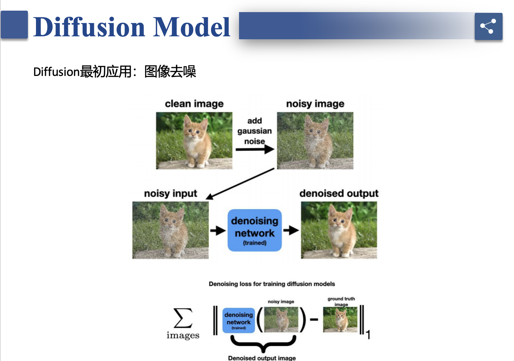
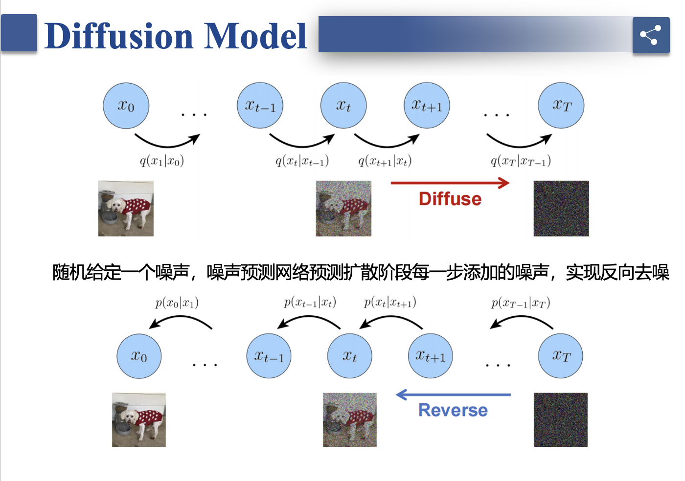
1. 双向马尔可夫链
- 前向扩散过程 (Diffuse, $q$)：
- 从干净图片 $x_0$ 开始，在 $T$ 步内逐段混入微小的高斯噪声。
- 终点 $x_T$：数据被完全毁灭，变成纯高斯噪声 $\mathcal{N}(0, \mathbf{I})$。
- 特权：前向过程无需网络参与。利用高斯叠加的重参数化技巧 (Reparameterization Trick)，可以用通项公式一步到位算出任意时刻的 $x_t$：
- 反向去噪过程 (Reverse, $p_\theta$)：
- 从纯物理噪声 $x_T$ 出发，借由神经网络（通常为 U-Net）预测并扣除噪声，一步步还原出干净图像 $x_0$。
2. 核心机密：为什么要“预测噪声”？
虽然理论上可以直接让网络预测原图 $x_0$，但高维像素拟合极易模糊。DDPM 证明了数学上的等价性：让网络去预测当前步骤中随机注入的那团高斯噪声 $\epsilon$，模型的收敛速度和出图质量会达到最优。
3. DDPM 核心算法伪代码对照
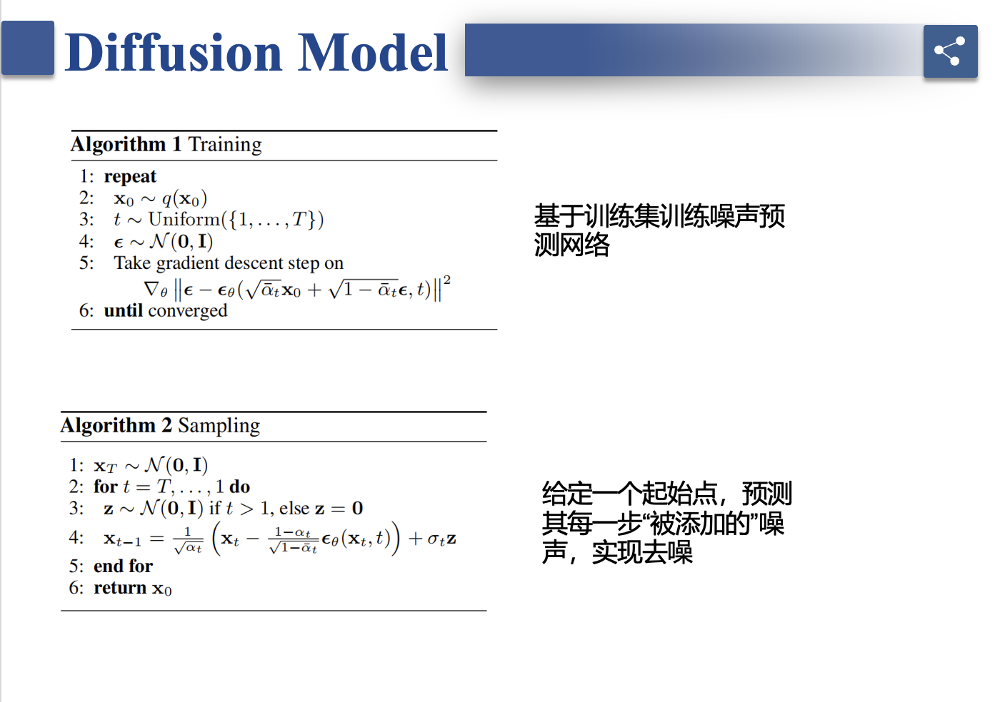
本质上是训练和预测阶段。
深度强化学习
一、 强化学习核心架构与要素
强化学习（RL）的核心思想是 智能体（Agent） 与 环境（Environment） 的试错（Trial-and-Error）交互环路。
- 状态（State, $S$）：智能体在当前时刻观察到的环境投影（如游戏画面、传感器数据）。
- 动作（Action, $A$）：智能体根据当前状态做出的决策。
- 环境（Environment）：接收动作，并根据客观规律反馈 新状态（$S’$） 和 奖励（Reward, $R$）。
- 奖励（Reward, $R$）：环境给出的即时得分，智能体的终极目标是追求长期累积奖励的最大化。
- 策略（Policy, $\pi$）：从状态到动作的映射关系，即智能体的“大脑决策方程”。
💡 从 RL 到深度强化学习（DRL）的转变
- 传统 RL：状态和动作空间较小，可以用表格（如 Q-table）显式存储。
- 深度 DRL：面对高维、连续的状态空间（如自动驾驶、高维图像输入），表格彻底失效。此时引入深度神经网络（DNN）作为函数逼近器，用来代替表格拟合策略 $\pi$ 或价值函数 $Q$。
二、 马尔可夫决策过程（MDP）与轨迹
1. 基本要素定义
- 状态空间：$S$
- 动作空间：$A$
- 随机性策略：$\pi(a|s) = P(A_t = a | S_t = s)$ （概率分布有利于探索和多策略博弈）
- 状态转移概率：$p(s’|s,a) = P(S_{t+1} = s’ | S_t = s, A_t = a)$ —— 环境的物理动力学规律
- 即时奖励：$r(s,a,s’)$
马尔可夫性（Markov Property）：下一时刻的状态 $s’$ 只取决于当前状态 $s$ 和当前动作 $a$，与更早的历史无关。
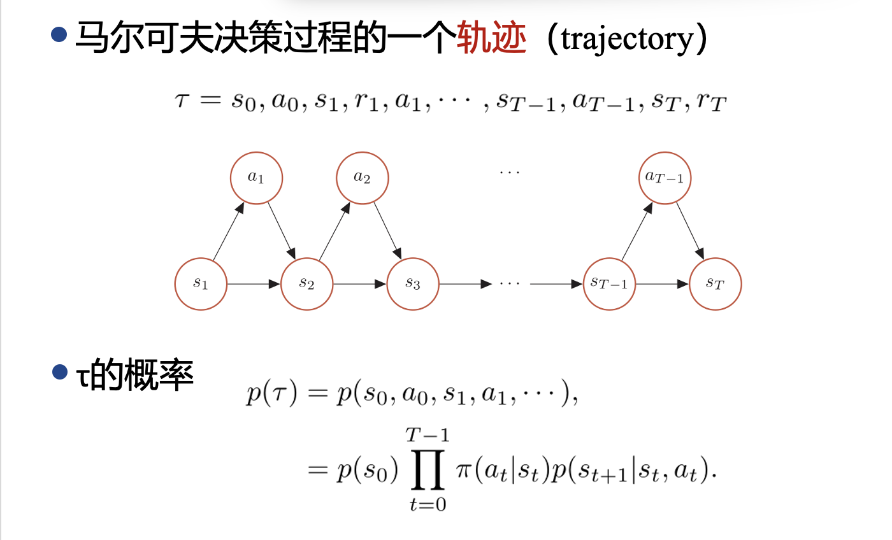
2. 轨迹（Trajectory, $\tau$）
智能体从任务开始到结束经历的完整序列：
一条特定轨迹发生的联合概率 $p(\tau)$ 根据链式法则和马尔可夫性推导为：
三、 总回报与目标函数
1. 折扣总回报（Return, $G$）
- 折扣率 $\gamma \in [0, 1)$：
- 经济学/现实逻辑：未来的奖励具有不确定性，眼前的利益最可靠。
- 数学收敛需求：在无限时间步的任务中，保证总回报求和后是一个有限的收敛值。
- 性格调参：$\gamma \to 0$ 导致智能体极度近视；$\gamma \to 1$ 促使智能体具有长远战略眼光。
2. 强化学习目标函数 $J(\theta)$
在 DRL 中，用 $\theta$ 表示策略网络的参数。优化的终极靶子是最大化期望回报：
⚠️ 核心痛点（策略驱动的数据分布）：
与传统监督学习不同，RL 的训练数据分布 $p_\theta(\tau)$ 是由网络参数 $\theta$ 决定的。参数变了，智能体走出的轨迹就会完全改变，这导致训练极易不稳定。
四、 强化学习算法全景图谱
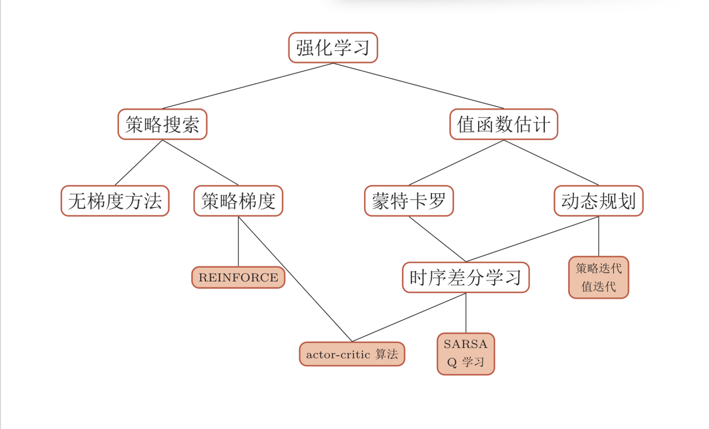
- 策略搜索（左翼）：直接对策略 $\pi_\theta$ 建模。如 REINFORCE 算法，赢了就整体提高整条轨迹动作的概率，输了就整体降低。
- 值函数估计（右翼）：不直接学动作，先学局势估分。
- 动态规划（DP）：Model-Based，必须已知环境物理模型 $p(s’|s,a)$。
- 蒙特卡罗（MC）：Model-Free，必须憋到游戏结束拿到真实 $G$ 才能更新。
- 时序差分（TD）：Model-Free 且支持单步更新（Bootstrapping）。Q-Learning/DQN 是其代表。
- Actor-Critic（底部会师）：现代 DRL 的王牌架构。Actor（策略网络）负责做动作，Critic（值网络）负责走一步看一步即时给动作打分。
五、 价值函数与贝尔曼方程
1. 状态价值函数 $V^\pi(s)$
评估某个局势的“静态含金量”：从状态 $s$ 开始，完全执行策略 $\pi$ 得到的期望总回报。
- 全期望分解：整体期望回报等于初始状态价值的期望：
2. 状态价值的贝尔曼方程（Bellman Equation）
利用分治思想，将漫长的未来折叠，用“未来的价值”定义“现在的价值”：
3. 动作价值函数 $Q^\pi(s, a)$
评估某个特定动作的动态价值：在状态 $s$ 下强行执行动作 $a$，此后的步数重新听从策略 $\pi$ 的期望总回报。
- Q 函数的贝尔曼方程（将 $V(s’) = \mathbb{E}_{a’}[Q(s’,a’)]$ 代入上式）：
💡 Model-Free 控制中为什么 Q 比 V 更常用？
- 如果大脑只学了 $V(s)$，做决策时必须知道状态转移概率 $p(s’|s,a)$，才能选出最优动作。
- 如果大脑学了 $Q(s,a)$，决策时直接无脑推向最大值即可：$a^* = \arg\max_a Q(s,a)$，完全不需要理会环境背后的物理公式。
六、 策略改进与优势函数
无法一步登天求解最优策略 时，通过自我超越来进行策略改进：
- 优势函数（Advantage Function）：代表动作 $a$ 的得分是否超越了当前策略的班级平均分 $V^\pi(s)$。
- 如果 $A(s,a) > 0$，说明该动作是潜力股，更新策略时应当增大该动作的输出概率。
七、 策略梯度定理（Policy Gradient）
为了直接最大化 $J(\theta)$，需要求解梯度 $\frac{\partial J(\theta)}{\partial \theta}$。
1. 对数导数技巧（Log-Derivative Trick）
利用微积分恒等式 ，成功把期望下标里的 扯进了期望号内部：
2. 环境消去（Model-Free 的数学底层火种）
对轨迹的对数概率求导时，不含 $\theta$ 的初始状态概率和环境状态转移概率（物理规律）在求导时全部变为 0 消失：
3. 因果关系优化（Reward-to-go）
根据因果律，当前的动作改变不了过去已经发生的历史奖励。抹除历史噪声后，原始策略梯度公式中的全局总回报 $G(\tau)$ 被优雅地替换为 未来累计回报 $G(\tau_{t:T})$：
八、 PyTorch 工程落地伪代码
在深度学习框架中，由于默认只有梯度下降，我们通过加负号将最大化目标转换为最小化伪损失函数（Pseudo-Loss）：
1 | |
大模型基础技术
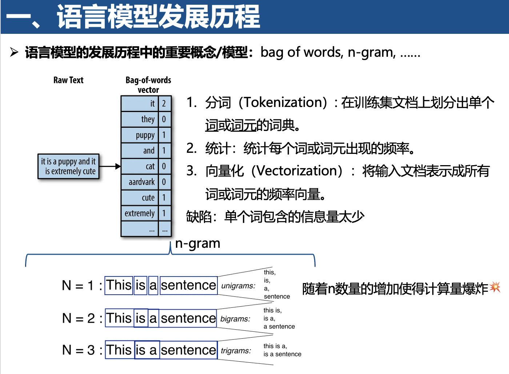
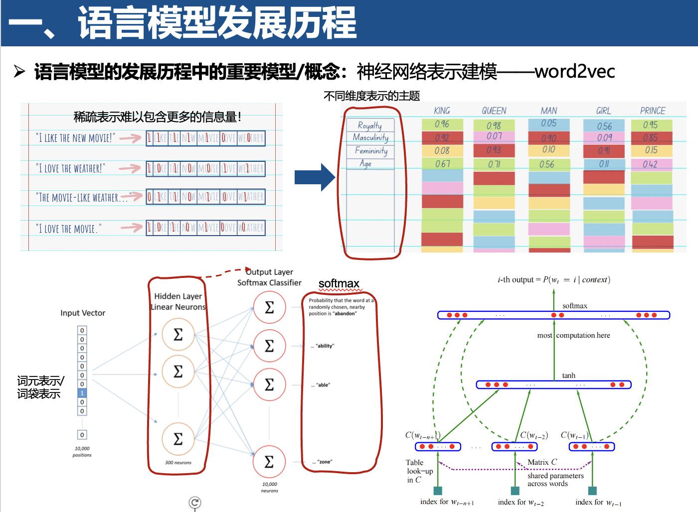
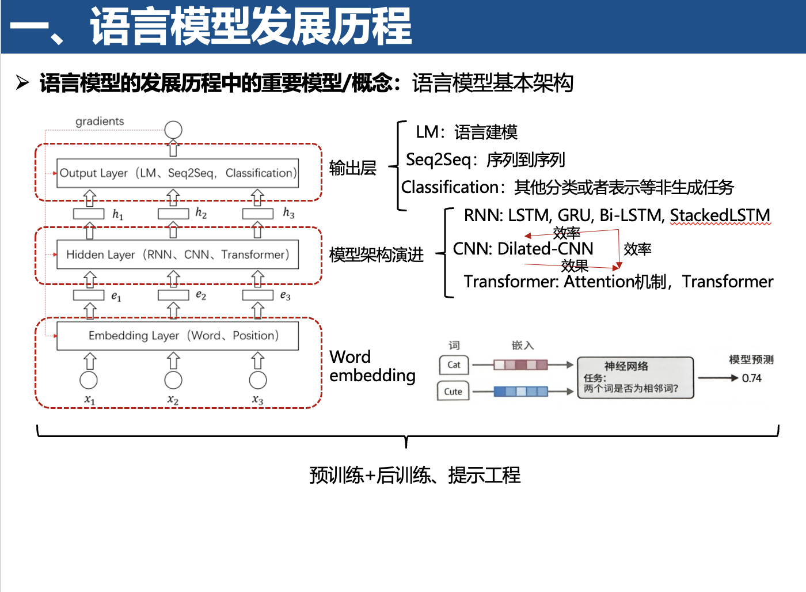
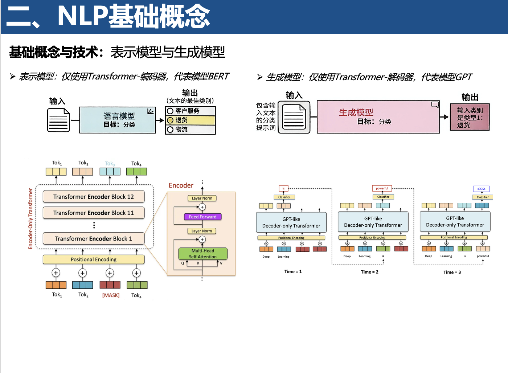
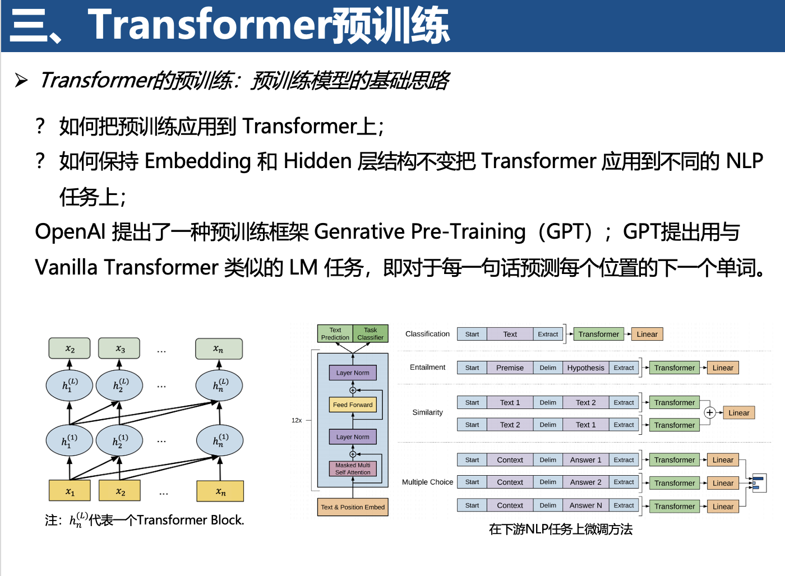
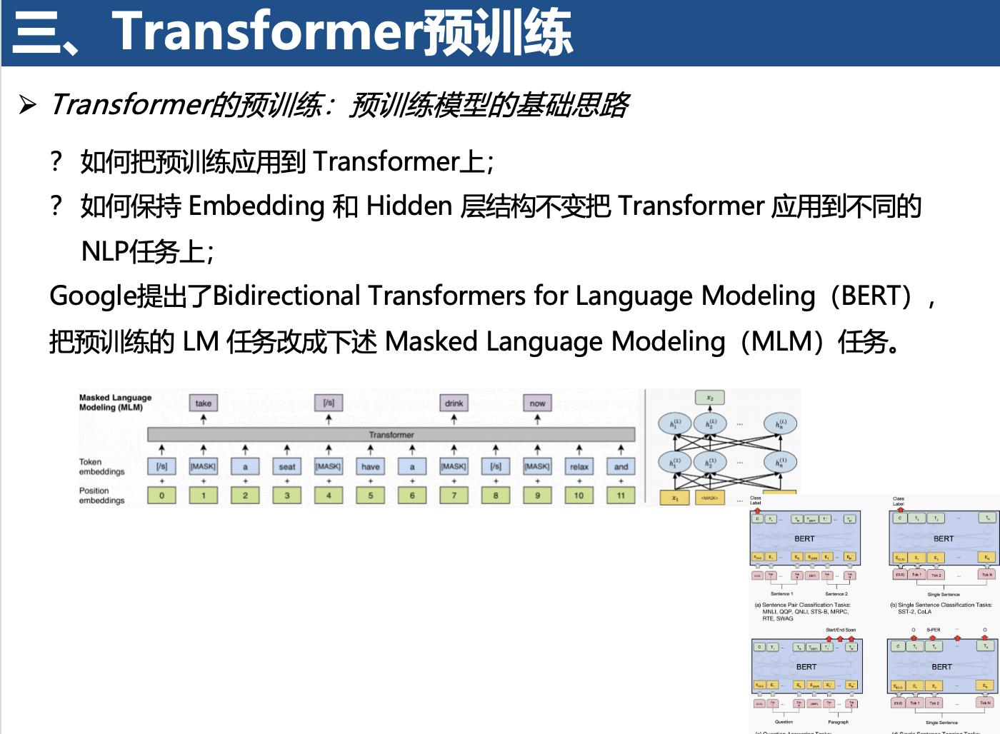
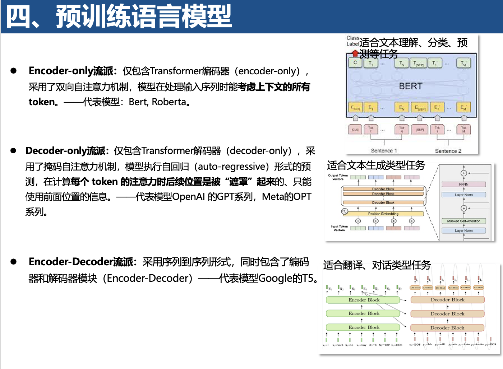
作业一答案
1. 机器学习三要素是什么？常见的三类机器学习问题是什么？
机器学习的三个基本要素是：
- 模型
- 学习准则
- 优化算法
常见的三类机器学习问题是：
- 监督学习
- 无监督学习
- 强化学习
机器学习三要素可以记为：
三类机器学习问题可以记为：
2. 写出以下经典机器学习方法的目标函数：线性回归、主成分分析、线性判别分析、支持向量机、加权线性回归
线性回归
线性模型为：
经验风险最小化 ERM
或写成：
结构风险最小化 SRM
其中 (J(w)) 是正则化项。
若：
则对应岭回归：
最大似然估计 MLE
假设：
其中：
则：
对数似然函数为：
最大化对数似然等价于最小化平方误差：
最大后验估计 MAP
最大后验估计为：
由贝叶斯公式：
由于 (P(Y|X)) 与 (w) 无关，所以等价于：
若参数先验为高斯分布：
则 MAP 等价于：
岭回归的解
岭回归目标函数：
其最优解为：
如果采用列向量排列方式，也可写成：
主成分分析 PCA
PCA 的目标是寻找投影方向，使投影后数据方差最大。
一维 PCA 目标函数：
约束为：
其中 (\Sigma) 是数据协方差矩阵。
多维 PCA 目标函数：
约束为：
线性判别分析 LDA
LDA 的目标是类间距离尽可能大，类内距离尽可能小。
目标函数为：
其中：
- (S_b)：类间散度矩阵
- (S_w)：类内散度矩阵
二分类最优方向为：
支持向量机 SVM
硬间隔 SVM
目标函数：
约束：
软间隔 SVM
目标函数：
约束：
也可以写成 Hinge 损失形式：
加权线性回归
目标函数为：
令：
矩阵形式为：
最优解为：
如果采用列向量排列方式，也可写成：
权重 (r^{(n)}) 的作用：
- (r^{(n)}) 越大，第 (n) 个样本对训练影响越大；
- (r^{(n)}=0) 时，该样本不参与训练；
- 权重可以表示不同样本的重要性。
3. 写出机器学习模型的几个评价指标的计算公式，并理解其含义：准确率、错误率、精确率、召回率
准确率 Accuracy
含义：所有样本中，预测正确的比例。
错误率 Error Rate
也可以写成：
含义：所有样本中，预测错误的比例。
精确率 Precision
含义：预测为正例的样本中，真正为正例的比例。
精确率也叫查准率，关注：
召回率 Recall
含义：所有真实正例中，被模型正确找出来的比例。
召回率也叫查全率，关注：
混淆矩阵符号含义
| 符号 | 含义 |
|---|---|
| TP | 真正例，预测为正，实际为正 |
| TN | 真负例，预测为负，实际为负 |
| FP | 假正例，预测为正，实际为负 |
| FN | 假负例，预测为负，实际为正 |
4. 写出随机梯度下降算法步骤
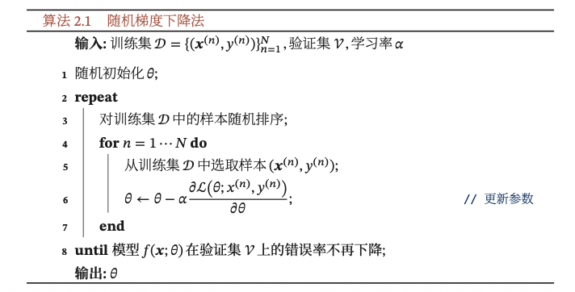
设目标函数为：
随机梯度下降算法步骤：
- 初始化参数：
- 从训练集中随机选取一个样本：
- 计算该样本损失函数的梯度：
- 更新参数：
即：
- 重复步骤 2 到步骤 4，直到满足停止条件。
SGD 核心更新公式为：
特点：每次只使用一个样本计算梯度并更新参数。
5. 推导前馈神经网络的反向传播算法，并写出使用反向传播算法的随机梯度下降训练过程
设第 (l) 层为：
损失函数为：
定义误差项：
输出层误差项：
隐藏层误差项：
参数梯度为：
使用反向传播算法的随机梯度下降训练过程：
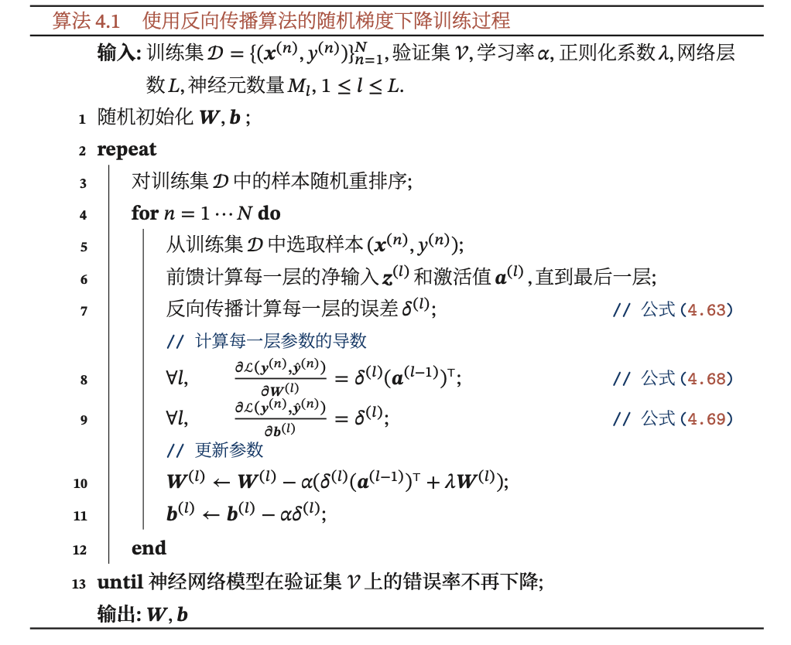
6. 推导卷积神经网络的反向传播算法
设卷积层为：
定义误差项：
卷积核梯度为：
偏置梯度为：
汇聚层反向传播：
- 如果是平均汇聚，误差平均分配给对应区域；
- 如果是最大汇聚，误差只传给最大值所在位置。
卷积层误差项反向传播：
其中：
- (rot180(\cdot))：卷积核旋转 (180^\circ)
- (\tilde{\otimes})：宽卷积
7. 推导循环神经网络的随时间反向传播算法，并说明长程依赖、梯度爆炸和梯度消失问题
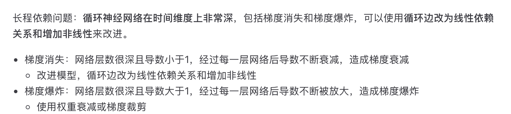
RNN 基本形式为：
总损失为：
BPTT 的核心思想：
将 RNN 按时间展开成一个多层前馈网络，然后使用反向传播算法计算梯度。
由于每个时间步共享参数，所以参数梯度是所有时间步梯度之和。
定义误差项：
当 (1\le k<t) 时：
参数 (U) 的梯度：
整个序列对 (U) 的梯度：
参数 (W) 的梯度：
偏置 (b) 的梯度：
长程依赖问题：
RNN 在处理长序列时，很难学习相隔很远时间步之间的依赖关系，这称为长程依赖问题。
梯度传播形式为：
若矩阵范数近似为 (\gamma)，则：
梯度爆炸：
当：
且时间间隔 (t-k) 很大时：
梯度会变得非常大，称为梯度爆炸。
改进方法：
- 梯度截断；
- 权重衰减；
- 合理初始化参数。
梯度消失：
当：
且时间间隔 (t-k) 很大时：
梯度会变得非常小，称为梯度消失。
改进方法：
- 使用 ReLU 等非饱和激活函数；
- 使用残差连接；
- 使用门控机制；
- 使用 LSTM、GRU。
8. 神经网络优化的改善方法有哪几个方面？
神经网络优化的改善方法主要包括：
- 使用更有效的优化算法；
- 使用更好的参数初始化方法；
- 使用数据预处理方法；
- 修改网络结构；
- 使用逐层归一化方法；
- 使用超参数优化方法；
- 使用正则化方法。
9. 什么是小批量梯度下降？影响小批量梯度下降法的主要因素有哪些？
小批量梯度下降每次从训练集中选取 (K) 个样本组成一个小批量：
计算平均梯度：
参数更新：
影响小批量梯度下降的主要因素：
- 批量大小 (K)
- 学习率 (\alpha)
- 梯度估计的准确性
- 数据打乱方式
- 优化器选择
10. 参数初始化方法有哪些？为什么神经网络不能初始化参数都为 0？
常见参数初始化方法：
- 固定值初始化
- 随机初始化
- 预训练初始化
- 基于固定方差的初始化
- 基于方差缩放的初始化
- 正交初始化
常见随机初始化方法：
高斯分布初始化：
均匀分布初始化：
Xavier 初始化：
适合 Sigmoid、Tanh 等激活函数。
He 初始化：
适合 ReLU 类激活函数。
神经网络不能全部初始化为 0 的原因：
如果所有权重都初始化为 0，则同一层神经元具有完全相同的输出。
反向传播时，它们得到相同的梯度，并进行相同的参数更新。
结果是：
因此，神经网络的权重通常不能全部初始化为 0，而应随机初始化。
11. 网络正则化方法有哪些？写出 L1、L2 正则化方法的优化目标函数，并画出示意图
常见网络正则化方法：
- L1 正则化
- L2 正则化
- 权重衰减
- 提前停止
- Dropout
- 数据增强
- 标签平滑
L1 正则化目标函数：
其中：
特点：
L2 正则化目标函数：
其中：
特点：
1 | |
作业二答案
1. 神经网络的优化和改善方法有哪些？
- 优化算法改进（SGD、Momentum、Adam等）；
- 参数初始化（Xavier初始化、He初始化、正交初始化等）；
- 数据预处理（标准化、归一化）；
- 逐层归一化（Batch Normalization、Layer Normalization等）；
- 网络结构改进（残差连接、跳跃连接、LSTM/GRU等）。
2. 写出Adam算法的内容
（1）一阶矩估计
（2）二阶矩估计
（3）偏差修正
（4）参数更新
特点：
- 收敛速度快；
- 自适应学习率；
- 对超参数不敏感；
- 应用广泛。
3. 理解几种比较常用的逐层归一化方法：批量归一化、层归一化、权重归一化和局部响应归一化
（1）批量归一化（BN）
特点：
- 加快收敛；
- 缓解梯度消失；
- 提高泛化能力；
- 适用于CNN。
（2）层归一化（LN）
特点：
- 不依赖Batch大小；
- 适用于RNN和Transformer。
（3）权重归一化（WN）
特点：
- 提高训练速度；
- 不依赖Batch；
- 适用于小批量训练。
（4）局部响应归一化（LRN）
特点：
- 增强局部竞争；
- 曾用于AlexNet；
- 现已基本被BN取代。
4. 写出L1、L2正则化的优化函数
（1）L1正则化
特点：
- 产生稀疏解；
- 具有特征选择能力。
（2）L2正则化
特点：
- 权重衰减；
- 防止过拟合；
- 一般不产生稀疏解。
5. 分析为什么不能在循环网络中的循环连接上直接应用丢弃法
- 会随机切断时间维度上的信息传递；
- 破坏隐藏状态的记忆能力；
- 加剧梯度消失问题；
- 难以学习长期依赖关系。
因此普通Dropout不能直接用于循环连接，通常只用于输入层 and 输出层。
6. 典型的无监督学习问题可以分为哪几类？
- 无监督特征学习（Unsupervised Feature Learning）；
- 概率密度估计（Probability Density Estimation）。
- 聚类
7. 写出主成分分析（PCA）的优化函数、求解过程及意义
（1）优化函数
约束：
（2）求解过程
构造拉格朗日函数：
求导：
取最大特征值对应特征向量作为主成分方向。
（3）意义
- 数据降维；
- 保留最大方差信息；
- 去除特征相关性；
- 降低计算复杂度；
- 抑制噪声。
8. 对于一个二分类问题，什么样的数据分布会使得PCA得到的特征反而降低分类性能？
- 类内方差远大于类间方差；
- 最大方差方向与分类方向不一致。
此时PCA保留最大方差方向，丢失类别判别信息，从而降低分类性能。
9. 若数据矩阵 $X’=X-\bar X$，对 $X’$ 进行奇异值分解 $X’=U\Sigma V^T$，则PCA投影矩阵是什么？
即最大 $k$ 个奇异值对应的右奇异向量组成的矩阵。
投影结果：
10. 写出线性编码的表达式，给定一组N个输入向量，写出其稀疏编码的目标函数，写出训练过程
（1）线性编码表达式
（2）稀疏编码目标函数
稀疏编码要求z中大部分元素为 0，只有少数几个元素非零。（稀疏约束：目标函数第二项尽可能为 0）
（3）训练过程
- 固定 $A$，优化 $z$；
- 固定 $z$，优化 $A$；
- 交替迭代直至收敛。
11. 写出自编码器的学习目标、自编码器结构；从学习目标上分析其和主成分分析（PCA）的关系
（1）结构
编码：
（2）学习目标
（3）与PCA关系
当：
- 单隐层；
- 线性激活函数；
- 均方误差损失；
时，
线性自编码器与PCA等价。
12. 写出稀疏自编码器的目标函数和含义
（1）目标函数
要求隐藏层 h 是稀疏的，也就是说隐藏层中大多数神经元为0 只有少数神经元被激活。
所以可以学习到更明显有用的特征。
（2）含义
- 保证重构误差小；
- 隐层表示尽可能稀疏；
- 学习更加有效的特征表示。
13. 学习、理解并写出堆叠自编码器的结构和训练方式
（1）结构
前一个编码器学到的隐藏表示，作为下一个编码器的输入。
逐步从低级特征学习到高级特征。
（2）训练方式
- 逐层无监督预训练；
- 整体监督微调。
14. 写出降噪自编码器的思想、结构和学习目标
（1）思想
人为向输入加入噪声，通过学习恢复原始数据。
（2）学习目标
输入：
输出：
目标：
优化函数：
15. 写出变分自编码器（VAE）的结构和目标函数，尝试理解训练过程
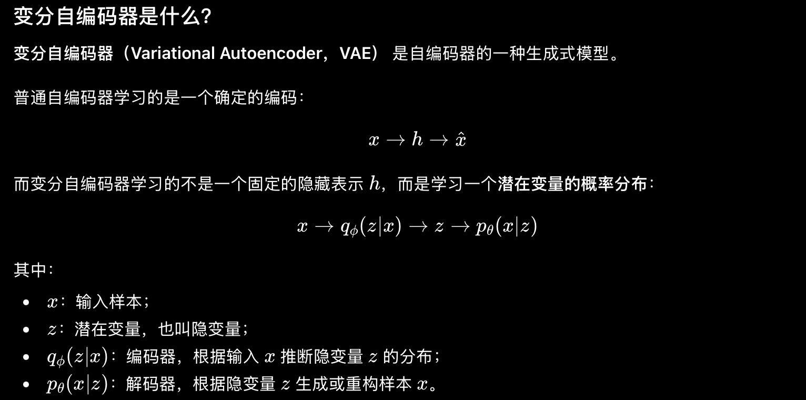
不直接把输入编码成一个固定向量，而是编码成一个概率分布，然后从这个分布中采样隐变量，再通过解码器重构输入。
（1）结构
（2）重参数化
（3）目标函数
（4）训练过程
- Encoder输出 $\mu,\sigma$；
- 重参数化采样 $z$；
- Decoder重构 $x’$；
- 计算重构误差；
- 计算KL散度；
- 反向传播更新参数。
更详细的：
变分自编码器（Variational Autoencoder，VAE）是一种生成式自编码器模型。与普通自编码器不同，VAE 不直接将输入 (x) 编码成一个确定的隐藏向量，而是将输入编码成一个潜在变量 (z) 的概率分布。
普通自编码器的形式为：
而 VAE 的形式为：
其中：
- (x)：输入样本；
- (z)：潜在变量；
- ：编码器，用来根据输入 (x) 推断隐变量 (z) 的分布；
- ：解码器，用来根据隐变量 (z) 重构或生成样本。
- VAE 的核心思想
VAE 的核心思想是：
不直接把输入编码成一个固定向量，而是编码成一个概率分布，然后从该分布中采样隐变量，再通过解码器重构输入。
编码器通常输出高斯分布的两个参数：
和
因此有：
然后从该分布中采样隐变量：
最后通过解码器得到重构结果：
- VAE 为什么要学习分布？
普通自编码器虽然可以重构输入，但它的隐藏空间可能是不连续、不规则的，因此不适合直接生成新样本。
VAE 希望潜在变量 (z) 服从一个规则的先验分布，通常是标准正态分布：
这样训练完成后，就可以直接从标准正态分布中采样：
再输入解码器生成新的样本。
因此，VAE 不仅可以重构输入，还可以生成新数据。
- VAE 的网络结构
VAE 主要由编码器和解码器两部分组成。
（1）编码器 Encoder
编码器输入样本 (x)，输出潜在变量分布的参数：
因此得到：
编码器的作用是根据输入样本推断隐变量的概率分布。
（2）解码器 Decoder
从隐变量分布中采样得到 (z)，然后输入解码器：
解码器的作用是根据隐变量 (z) 重构输入样本，或者生成新的样本。
- 重参数化技巧
VAE 中存在一个关键问题：采样操作
本身不可直接求导，会影响反向传播。
因此 VAE 使用重参数化技巧：
其中：
这样随机性被转移到 上，而 和 仍然可以通过神经网络进行反向传播训练。
重参数化技巧的作用是：
使 VAE 中的采样过程可以参与梯度下降和反向传播训练。
- VAE 的目标函数
VAE 的损失函数通常由两部分组成：
常见形式为：
其中，第一项：
表示重构误差，要求解码器生成的结果尽可能接近原始输入。
第二项：
表示 KL 散度正则项，要求编码器得到的隐变量分布 尽量接近先验分布：
因此，VAE 的训练目标是：
一方面要求重构效果好，另一方面要求隐变量空间服从规则的标准正态分布。
- VAE 和普通自编码器的区别
普通自编码器：
其中 (h) 是确定的隐藏表示。
变分自编码器：
其中 (z) 是从概率分布中采样得到的隐变量。
二者区别是：
普通自编码器学习确定性的编码，主要用于特征提取和数据重构；VAE 学习隐变量的概率分布，不仅可以重构输入，还可以从潜在空间采样并生成新样本。
- 考试回答版
变分自编码器是一种生成式自编码器模型。与普通自编码器不同，VAE 不直接将输入 (x) 编码为一个确定的隐藏向量，而是通过编码器学习隐变量 (z) 的概率分布：
其中编码器输出均值 和方差 ，然后从该分布中采样隐变量 (z)，再通过解码器重构输入：
为了使采样过程可以进行反向传播，VAE 使用重参数化技巧：
VAE 的目标函数由重构误差和 KL 散度两部分组成：
其中，重构误差要求生成结果尽可能接近原始输入，KL 散度要求隐变量分布接近标准正态分布：
因此，VAE 的核心思想是：在保证重构效果的同时，使潜在空间具有连续、规则的概率结构，从而可以通过从先验分布中采样隐变量来生成新的数据。
16. 模型独立学习方式有哪些？
- 集成学习（Ensemble Learning）；
- 自训练（Self-Training）；
- 协同训练（Co-Training）；
- 多任务学习（Multi-Task Learning）；
- 迁移学习（Transfer Learning）；
- 终身学习（Lifelong Learning）；
- 元学习（Meta Learning）。
作业三答案
1. 画出软性注意力机制的普通模式，键值对模式 P195
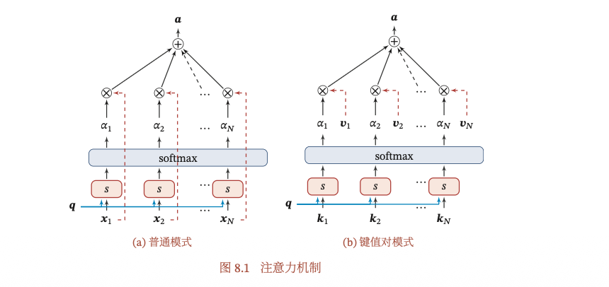
2. 写出以下指针网络的工作原理 P198
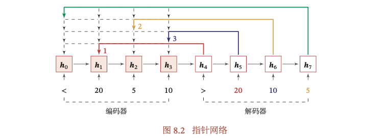
指针网络（Pointer Network）是一种基于注意力机制的序列到序列模型。它不从固定词表中生成输出，而是在每个解码时刻利用注意力机制计算输入序列各位置的概率分布，并选择概率最大的输入位置作为当前输出。其本质是利用注意力机制完成“指针”操作，实现从输入序列中选择元素。该方法能够处理输出字典大小随输入长度变化的问题，常用于排序、路径规划、旅行商问题等组合优化任务。
3. 自注意力模式 Q，K，V模式 P199
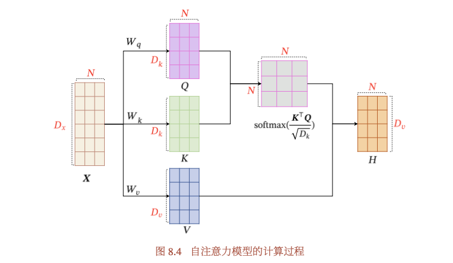
4. 画出并理解全连接模型和自注意力模型的对比
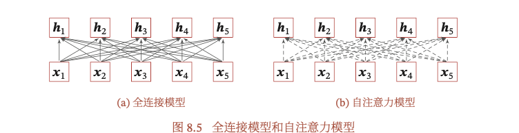
5. 理解并描述神经图灵机的工作原理 P205-206
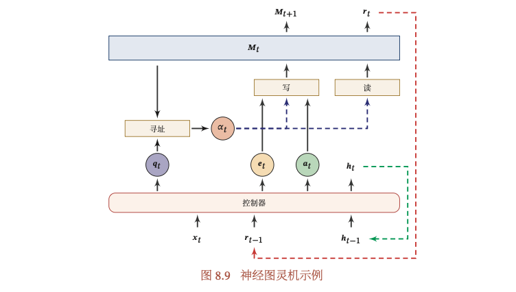
神经图灵机（NTM）是在神经网络中引入外部存储器的模型，由控制器、存储器和读写头组成。控制器通过注意力机制确定存储位置，读头从存储器读取信息，写头向存储器写入信息，再结合读取的信息产生输出。其核心思想是将神经网络的学习能力与计算机存储器的记忆能力结合起来，从而增强模型的长期记忆和复杂推理能力。
6. 理解并描述 Hopfield 网络的工作原理 P207-208
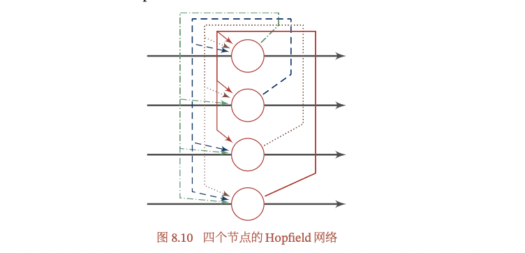
Hopfield网络是一种具有联想记忆功能的反馈神经网络，由全连接且对称连接的神经元组成，网络通过权值存储记忆模式，并构造能量函数来描述网络状态。神经元根据其他神经元的状态不断更新自身状态，使网络能量持续下降，最终收敛到某个稳定状态。已存储的记忆模式对应能量函数的局部极小点，因此当输入一个不完整或受噪声干扰的模式时，网络会通过迭代更新自动收敛到与其最接近的已存储模式，从而实现联想记忆、内容寻址和错误纠正功能。
作业四答案
1、学过的判别式人工智能模型有哪些？写出至少 10 种模型。
判别式人工智能模型主要用于回答“这是什么”“属于哪一类”“结果会怎样”，即完成分类、回归、预测、识别、判断等任务。常见模型有：
- 线性回归模型
- Logistic 回归模型
- Softmax 回归模型
- 感知器模型
- 支持向量机 SVM
- k 近邻算法 KNN
- 决策树
- 随机森林
- AdaBoost 集成学习模型
- 前馈神经网络
- 卷积神经网络 CNN
- 循环神经网络 RNN
- 长短期记忆网络 LSTM
- 门控循环单元 GRU
- Transformer 判别模型
其中，Logistic 回归、Softmax 回归、感知器和支持向量机是典型的线性分类模型；前馈神经网络、卷积神经网络、循环神经网络和 Transformer 可以看作更复杂的非线性判别模型。:contentReference[oaicite:0]{index=0}
2、常见的生成式模型包括 Transformer / 自回归模型、VAE 变分自编码器、扩散模型 Diffusion Models、GAN 生成对抗网络。
（1）画出 Transformer 结构，写出工作原理。
Transformer 结构图
1 | |
工作原理
Transformer 是一种基于多头自注意力机制的序列到序列模型，整体由编码器 Encoder 和解码器 Decoder 两部分组成。编码器负责对输入序列进行表示学习，解码器负责按照自回归方式逐步生成输出序列。
Transformer 首先将输入词转换为词向量，并加入位置编码，使模型能够获得序列中词语的位置信息。之后，编码器通过多头自注意力机制计算序列中每个词与其他词之间的相关性，从而捕捉长距离依赖关系。其核心计算为：
其中，$Q$ 是查询矩阵，$K$ 是键矩阵，$V$ 是值矩阵。通过 $QK^T$ 计算注意力分数，再经过 softmax 得到注意力权重，最后对 $V$ 加权求和得到输出表示。
多头注意力是将 $Q、K、V$ 分成多个子空间分别计算注意力，再将多个头的结果拼接起来，使模型能够从不同角度学习序列特征。每一层还包含残差连接、层归一化和逐位置前馈神经网络 FFN，用来增强模型表达能力并稳定训练。
解码器在生成时采用掩蔽自注意力，保证当前位置只能看到当前位置之前的信息，不能看到未来词；然后通过编码器-解码器注意力从输入序列的编码结果中提取相关信息，最后经过全连接层和 Softmax 输出下一个词的概率。整个过程不断重复，直到生成完整序列。
（2）画出变分自编码器结构，写出基本工作原理。写出主要的损失函数。
变分自编码器 VAE 结构图
1 | |
基本工作原理
变分自编码器由推断网络和生成网络组成。推断网络也可以看作编码器，它将输入样本 $x$ 映射为隐变量 $z$ 的概率分布 $q(z|x;\phi)$；生成网络也可以看作解码器，它将隐变量 $z$ 映射回观测变量分布 $p(x|z;\theta)$。VAE 与普通自编码器不同，它的编码器和解码器输出的是概率分布或分布参数，而不是确定的编码。:contentReference[oaicite:3]{index=3}
为了便于训练，通常假设隐变量分布服从高斯分布：
编码器输出均值 $\mu_I$ 和方差 $\sigma_I^2$，再通过重参数化技巧进行采样：
这样可以把随机采样过程转化为可导形式，使整个网络能够使用反向传播训练。
主要损失函数
VAE 的训练目标是最大化证据下界 ELBO：
等价地，最小化损失函数：
其中：
表示重构损失，用来保证生成样本 $\hat{x}$ 尽量接近输入样本 $x$；
表示 KL 散度正则项，用来约束隐变量分布接近先验分布 $N(0,I)$。
若假设 $p(x|z;\theta)$ 服从高斯分布，则目标函数常写成：
其中第一项是重构误差，第二项是 KL 散度正则化项。
（3）画出生成对抗网络 GAN 的流程图，写出其工作原理。写出主要的损失函数。
GAN 流程图
1 | |
工作原理
GAN 由生成器 Generator 和判别器 Discriminator 两个网络组成。生成器 $G(z;\theta)$ 的输入是随机噪声 $z$，输出是生成样本 $G(z)$；判别器 $D(x;\phi)$ 的输入是真实样本或生成样本，输出该样本来自真实数据分布的概率。
训练过程中，判别器的目标是尽可能准确地区分真实样本和生成样本；生成器的目标是生成尽可能逼真的样本，使判别器无法判断其真假。两者目标相反，通过交替训练形成对抗过程。当训练达到理想状态时，生成器生成的样本分布接近真实数据分布，判别器无法区分真实样本和生成样本。
主要损失函数
GAN 的经典极小极大目标函数为：
判别器损失函数通常写为：
生成器原始损失函数为：
实际训练中也常使用非饱和形式：
即让生成器最大化判别器把生成样本判断为真实样本的概率。判别器使用交叉熵损失进行二分类训练，真实样本标签为 1，生成样本标签为 0。
（4）写出扩散模型的基本流程图，写出其工作原理。写出主要的损失函数。
扩散模型基本流程图
1 | |
工作原理
扩散模型是一类生成式模型，核心思想是“先加噪、再去噪”。它包含两个过程：前向扩散过程和反向生成过程。
前向扩散过程从真实样本 $x_0$ 开始，在每一步加入少量高斯噪声，使数据逐渐被破坏，最终变成接近标准高斯分布的纯噪声 $x_T$。其过程可写为：
经过多步加噪后，有：
其中， 是噪声强度，。
反向生成过程从随机噪声 $x_T\sim N(0,I)$ 开始，通过神经网络逐步预测并去除噪声，恢复出清晰样本 $x_0$。神经网络通常学习预测每一步加入的噪声 $\epsilon$，再根据预测噪声反推出更干净的样本。生成时，模型不断执行：
1 | |
最终得到生成样本。
主要损失函数
扩散模型常用的主要损失函数是噪声预测均方误差：
其中：
$\epsilon$ 表示真实加入的高斯噪声，$\epsilon_\theta(x_t,t)$ 表示神经网络预测出的噪声。该损失函数的目标是让模型准确预测噪声，从而在生成阶段能够逐步去噪，最终从随机噪声生成真实样本。